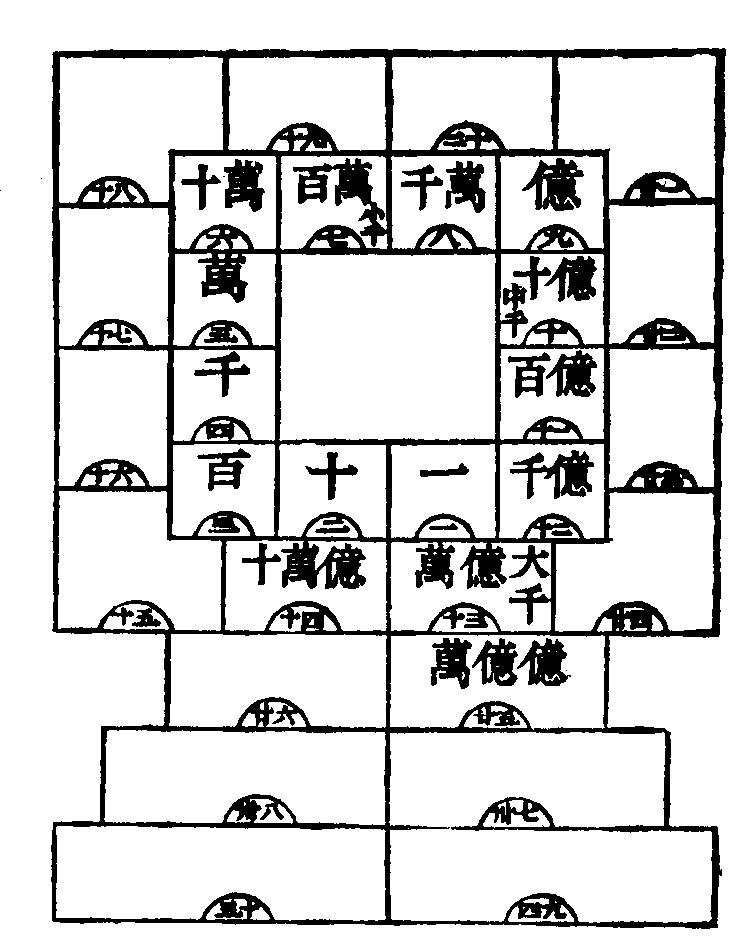
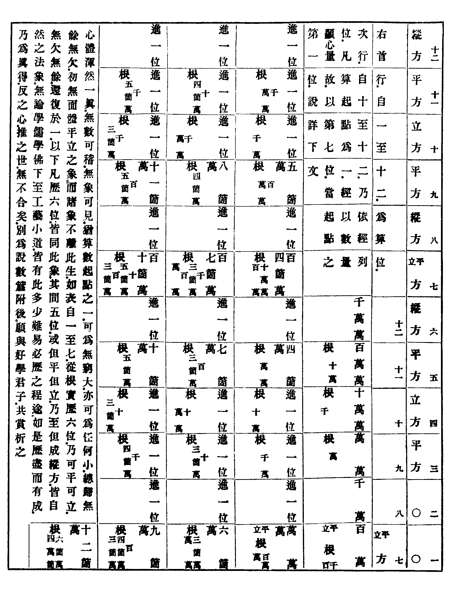

卍新纂大日本續藏經 第62冊
No.1205 報恩論 (2卷)
【清 沈善登述】
第 1 卷
No. 1205
報恩論
報恩論目錄
上卷多說理性。下卷先以兩歌。斷疑生信。次以公據等三篇。專說事修。而末篇之說。遂附及之者。所謂應病與藥。期於病藥雙忘。性修不二。而止世界無盡。未來無窮。區區本願具在。代眾回向疏矣。度必有無量發心。菩薩覧而興起者。佛法世法真俗圓融之本旨。庶幾普徧昌明歟。其卷首卷附諸篇。無非欲發明此旨。已詳卷首述意篇。子簡既為寫錄。隨依香巖例。句讀圈點之。為令閱者易於醒目。文人批尾陋習。固不暇避也。其用意良苦。有心人應共諒爾。
未還謹識
列聖護法綸音 報恩論卷首
朕惟立綱陳紀敷政而易俗移風見性明心傳教以牖民覺世考其功業則事有殊途論厥精微斯旨歸同軌然遡無生之真諦不緣意象以求證般若之妙源非因文字而顯欲問大千之覺路先皈不二之度門賴初祖之既來遂灋衣之不絕燃燈而照昏瞶建鼓以醒愚聾爰指善誘之津誕施方便之力付灋將逾百代知名何僅千人莫不宗旨共扶流風大闡用慈悲而度天下佐平治以化民生允有裨於盛時故恒尊於歷世茲聞爾僧通琇慧通無始智洞真如續五葉之正宗萬灋從而歸一屏六根之邪識四大是以盡空掃末世之狂禪秉如來之正覺誠超生融之學而迥播觀摩之名者也朕俯詢灋器緬想高風思御宇以來期沛無為之治而虗席以待樂聞無漏之因用是特遣司吏院掌印官張嘉謨頒賜璽書遠延杖錫爾其遄驅象馭早踐龍墀陳密義之慧空贊皇猷之清淨嗚呼順風而問朕將同訪道于崆峒計日以來爾尚效朝宗之江漢欽哉故諭。
又順治十六年四月
朕維教闡西乾灋流東土付妙心於四七傳正果於二三莫不以參悟透脫者為真乘操履純一者為灋器故南嶽不汙垂護念於庾嶺馬師大用揭震喝於雄峰以至滹水建黃檗之宗高峰繼雪巖之緒源遠流長良有以也朕殫心誠正遜志危微務期於道岸誕登允懷乎德修罔覺因念夫禔躬立政聿本於見性明心大道本同精義無二緬思宗派必有高人聞爾禪師通琇臨濟嫡傳笑巖近裔心源明潔行解孤高故於戊戌之秋特遣皇華之使聘來京闕卓錫上林朕於聽覽之餘親詢釋梵之奧見其機鋒峻利論義圓通直指向上之關信稱諦當證徹無生之旨不落言詮實獲我心深契予志間泛及於眾說亦博綜乎百家名理恒超決疑無滯洵灋門之龍象禪苑之珠林者也用是特降褒綸賜號大覺方欲久留瓶鉢時聽伽音冀朝夕之啟予庶默成夫元旨而禪師欲全子道祈盡孝思堅請還山勉襄石塔遠追目犍連之度母近承陳尊宿之養親有裨人倫克端風化朕俯徇其願敕護遄歸惜山川之既遙倐夏秋之已隔永言遺韻惓惓於懷追惟對御之言實發大乘之秘傳燈可續末灋所希爰是復降溫綸加封大覺普濟禪師賜以紫衣並予金印遣使齎往昭朕眷衷重揚灋席之輝永鎮山門之寶於戲龍章載錫式增慧日光華椹服新頒克紹佛衣灋數祈承顯命益勉勤修欽哉故諭。
又
自杖錫南還時勤企念五湖煙景三江秀麗荷衣松食致足樂也閶闔風至秋色依依益深白露伊人之想自邇以來企徹禪宗勤心灋寶慨佛果應庵之後差近閴寂今雷音雖震而北方猶若未聞故末灋比邱少奉戒律其口談無而行在有者又如麻粟也茲欲於都城建立皇壇俾衲子一千五百人眾受毗尼戒七條一縷出自上方五戒三皈重宣佛義然非禪師親為羯磨正恐以最上慈航為人天階級耳惟冀荷擔如來闡明大灋不辭遠道惠然肯來則皇城四眾重聞薝蔔之香新學緇流頓長菩提之樹知禪師以佛灋大事為先不以靜退小節縈念也遙瞻浮渡速慰悠懷。
稽考梵書補陀羅迦山有三一居厄納忒黑一居忒白忒一居南海即是山也本山誌書未得其詳當年海寇猖狂凡禁海之外寺宇梵剎皆為灰燼自康熈二十二年蕩平臺灣海波永息故遊方衲子因舊基址斬蓬蒿艾藜藿而更新焉朕時巡浙西特遣專官虔修淨供敬書題額永鎮山門復發帑金重修寺宇務俾殿堂廡牖丹碧華燁棼橑煥美而一木一石悉出公家一夫一役不煩民力上為
慈闈延禧下為蒼生錫祉也朕自弱齡誦讀經史以修齊治平為本未暇覧金經貝葉空寂泡影之文所以不能窺其堂奧槩而言之元者善之長也佛者以善為本推而擴之大約無二上天好生化育萬彚大士慈悲度盡眾生亦無二也朕求治勤民四十餘載矣今者兵革已銷而民生未臻康阜梗頑雖化而民心未盡淳良皆因水旱靡常豐歉各異此朕寤寐孳孳不能釋也以大士之力庶幾慈雲法雨甘露祥風使歲稔人安萬姓仁壽則普濟之弘功即時雍之上理是朕之心也夫爰書翰簡勒諸穹碑垂示無盡云。
朕御麻凝庥心周區域省方設教蹕駐山湖眷茲民力於東南詎止皇輿之名勝若迺因其舊蹟無侈前觀則天竺寺之所由以重修也粤惟鷲嶺著於西方法輪則一竺峰麗於南國名剎維三固緇梵所薰修亦僊靈之窟宅潮音送響遙接普陀塔影橫空長留舍利瑞光發於澗上奇木像大士之容白衣感夫夢中淨域建看經之院或旱乾間作禾麥告枯而幡蓋來迎霪雨濡足有禱輒應無福不臻斯固歷晉宋以迄今實亦載簡編而可信意者能仁之量等於好生佛道之成關乎民隱推斯指也不其偉與將使般若之門隨方而啟仁壽之域舉世咸登有其興矣曷可廢哉朕曩者親奉
慈闈式臨茲宇自芳湖而西顧望初地以南循輦過花迎旌迴雲捲巖深乳竇含真珠之寶光峰轉飛來帶琉璃之紺色百靈斯護七聖不迷既祝我
皇太后壽履康甯復冀凡茲庶民室家盈慶然則迦釋之弘慈與國家之布德豈有殊也顧念山靈如昔寺貌未新我
皇太后為國發心為民祈福時申
慈命重葺香林茲役之興不妨民事凌雲再煥將無乾竺之靈匪日成功實篤坤元之慶恒沙國土偕常樂以同升億萬蒼生享太平而無極是則我
皇太后之聖心依然迦釋之心而於朕經營天下利濟生民之心亦適有愜也夫。
再諭粵溯道統之傳堯舜以至周公孔子聖聖相承精一不雜原無藉於釋道自漢以來三教流傳炳若三光屹然鼎峙歷千百年而不廢不墜豈非道並行而不相悖歟吾儒正心率性釋家明心見性元門修心煉性以言乎體則同聖人之明德新民如來之自利利他太上之度人無量以言乎用又同中庸曰戒慎乎其所不睹恐懼乎其所不聞內典云六塵涉境心不隨緣道德經云不見可欲使心不亂以言乎進修工夫亦未嘗不同何下士往往以管蠡之見縱橫辯駁以逞其胸臆蓋止據形迹而論而實未窺其奧蘊也其言以為二氏之學全無關乎世道人心而孰知有不然者夫積善之家必有餘慶積不善之家必有餘殃理載於周易善惡之報如影隨形義著於感應篇四生六道因果輪迴之秘諦散見於大藏諸經其所以警戒提撕誘掖獎勸若合符節究其指歸無非勉人為善而已况細而閨闈里巷遠而海澨山陬有不可以禮樂維持詩書訓導者而二氏之教皆足以感發其皈向之誠消磨其隱微之慝由是觀之釋道甯無補於王化也哉試問中國將此三途去二留一能乎否耶不能則何必分門立戶互相排擠有若聚訟然顧茲末法黃冠緇流下愚者多率皆餓夫懶漢苟希利養以故招提蘭若竟成藏垢納污之地此輩猶如穀之有稗粟之有粃惟在分別孰稗孰粃豈可併穀粟而概棄之乎朕向來三教並重一體尊崇於奉佛敬仙之禮不稍輕忽每見章句之士鄙薄二氏動輒輕蔑擯斥而託名理學者尤甚及考其操履與理學真詮又大相徑庭此不過井蛙籬鷃之徒耳何足與較浙江俗稱僧海乃衲子卓錫勝地近十年來不特指月清機宗風透徹者罕見即精通教律者亦未聞其人叢林凋謝可勝太息汝仰體朕意於公務之餘留心護持使不至過於寥落傾頺不必著相莊嚴也此諭汝自領會毋令眾知何也士子聞之徒為好佛之譏釋子聞之致增我慢之相其中庸流或因而縱肇甚至紊亂清規有千法紀是朕憐之而反害之也密之。
又雍正二年四月十九日
上諭內閣前有條奏婦女入廟進香成羣聚會混雜行走妄費無益及入于別教妖言惑眾理宜禁止者曾降旨准行但並非禁止民人于名山寺廟中禮拜也今聞凡係寺廟概行禁止不許民人叩拜又往[髟/了]髻山進香人等于金盞河地方掛號取稅皆與朕旨不合其禁止太過之處在京著禮部查明具奏金盞河地方交與直隸巡撫令其查明具奏。
但應禁止邪教惑眾從未有禁人喫齋之理此奏甚屬乘謬之至朕不解汝具何意見而云然若將此等無理妄舉以為盡心任事實力奉行則大誤矣既云年老願齋者聽而闔家大小喫齋者又欲坐罪更屬可笑之談如於一家老者小者飲食之際稽查某齋某不齋其紛擾為何如耶觀一切辦理覆奏不但浮泛不實且每多乖張失指大有心志惶惑光景嗣後仍不痛自儆省加勉誠敬則朕恩殊為可惜也。
又雍正十一年二月十五日
上諭內閣朕惟三教之覺民於海內也理同出於一原道並行而不悖人惟不能豁然貫通於是人各異心心各異見慕道者謂佛不如道之尊向佛者謂道不如佛之大而儒者又兼闢二氏以為異端懷挾私心紛爭角勝而不相下朕以持三教之論亦惟得其平而已矣能得其平則外略形迹之異內證性理之同而知三教初無異旨無非欲人同歸於善夫佛氏之五戒十善導人於善也吾儒之五常百行誘掖獎勸有一不引人為善者哉昔宋文帝問侍中何尚之曰六經本是濟俗若性靈真要則以佛經為指南如率土之民皆湻此化則吾坐致太平矣何尚之對曰百家之鄉十人持五戒則十人湻謹千室之邑百人持十善則百人和睦持此風教以周寰區則編戶億千仁人百萬而能行一善則去一惡去一惡則息一刑一刑息於家萬刑息於國洵乎可以垂拱坐致太平矣斯言也蓋以勸善者治天下之要道也而佛教之化貪吝誘賢良其旨亦本於此苟信而從之洵可以型方訓俗而為致君澤民之大助其任意詆毀妄揑為楊墨之道之論者皆未見顏色失乎瞽之說也朕居藩邸留心內典於性宗之學實深領悟御極以後宵旰靡遑且恐啟天下以崇尚釋教之疑是以未嘗形之談論欲俟庶政漸理始舉三教合一之旨提撕警覺以明互相詆毀者之非今逾十年矣聽政餘暇偶將朕之所見並昔人論說數條舉以示天下之學道者古人有曰周孔六經之訓忠孝履其端李老二篇之言道德創其首瞿曇三藏之文慈悲為其本事跡雖異理數不殊皆可崇可慕者又有曰儒以正設教道以尊設教佛以大設教觀其好生惡殺則同一仁也視人猶己則同一公也懲忿塞欲禁過防非則同一操修也又有曰以佛治心以道治身以儒治世又有曰佛之言性與諸書同聖人同其性則廣為道德人能同誠其心同齋戒其身同推德於人則可以福吾親可以資吾君之安天下又有曰佛之道與王道合王道者皇極也皇極者中道之謂也佛之道亦曰中道不偏不邪其旨相同又有曰佛教之設使人棄華而就實背偏而歸善由力行而造於安行由自利而至於利彼其為生民之所依歸者無以加矣又有曰人謂釋氏惟務上達而無下學不思釋氏之六波羅密由禪定而到彼岸豈非下學上達之旨乎又有曰天下無二道聖人無兩心蓋道者先天地而生亘古今而常存聖人得道之真以治身以其緒餘土苴治天下國家豈不大哉故聖人或生於中國或生於西方或生於東夷西夷生雖殊方而其得道之真若合符契未始殊也以上數條皆於聖賢之理同流共貫未見其為謬異也三教雖各具治心治身治世之道然各有所專其各有所長各有不及處亦顯而易見實缺一不可者夫習釋道之學雖有偏有正而習儒者之學亦有真有偽即如釋中以狂空欺世道中以邪術愚人是固釋道之罪人也亦如儒中博覧詩書高談仁義而躬蹈亂臣賊子行之者謂非名教之罪人乎若掩人之長而斥其短隱己之短而誇其長互相肆口詆排者皆私詐小人形態非仁人君子懷德抱道之所為亦徒見其不自量耳數年來有請嚴禁私自剃度者有請將寺觀改為書院者有縣令無故毀廟逐僧者甚至有請僧尼悉行配合夫婦可廣增人丁者悖理妄言惑亂國是不思鰥寡孤獨為國家之所矜恤彼既立願出家其意亦為國家蒼生修福田耳乃無故強令配合以拂其性豈仁君治天下者之所忍為乎因皆下愚小輩朕亦未窮治其妄誕之罪至於品類不齊其中違理犯科者朝廷原有懲創之條而其清修苦行精戒明宗者則為之護持其邪說外道則嚴加懲治如道忞行峰之紀載謬妄法藏弘忍之魔說猖狂朕悉降旨指摘決不令混冒正法以致真偽罔辨也朕於三教同原之理探溯淵源公其心而平其論令天下臣庶佛仙弟子有各挾私心各執己見意存偏向理失平衡者夢覺醉醒焉故委曲宣示以開愚昧凡有地方責任之文武大臣官員當承事朕旨加意護持出家修行人以成大公好善之治特諭。
有儒士問三教之同異王云若論○以內三教實同一道不可泥於迹象涉於事為而妄生分別也儒以修齊治平設教道以虗無清淨設教究其所以示人者不能外○者箇而釋教亦不捨離○者箇既不捨離即此○內而言則不謂之一貫不可也若以○之外周孔黃老之書未言及此能明此者惟有釋典耳下士愚盲小智見淺謂○以內尚不明了何暇究○以外不知○以內者倚○以外者而立若不明○以外則○以內無論不能頓地透脫即使到得盡處猶有者箇○在人但知拘滯生死不知窮其無生不死此一大關惟此一路方透即以佛教而論如講演戒律何嘗不與宗為一貫必須宗為之統攝離宗則盡屬幻作宗乃第一義也然一亦不立方是佛旨即此觀彼自明三教分合之定論圓明寧甘汝等迂儒之謗斷不忍令眾生長溺苦海而不拯救指迷也士聞愕然諾諾而退。
朕前以應付僧火居道士竊二氏之名而無修持之實甚且作姦犯科難於稽察約束是以酌復度牒之法使有志修行者永守清規而無賴之徒不得竄入其中以為佛老之玷其情願還俗者量給資產其餘歸公留為養濟窮民之用此亦專為應付僧火居道士而言也名山古剎閉戶清修者在所不問前降諭旨甚明現交與王大臣九卿會議乃聞外省傳述錯誤一切僧道皆有惶惑不安之意恐將資產歸公遂爾弊端百出有將己身田宅詭寄他人戶下希圖藏匿者有謀囑書吏分立花戶詭名以多報少者有減價速求售賣變銀入橐者且有局外匪類從中藉口索詐者夫此僧道既謀利戀財如是揆之仙佛之法乃糠粃稂莠也即取其私橐歸公以養濟貧民亦何不可之有天下後世自有公論但朕之本意原以天地好生之心為心一物不得其所如己推而納之溝中此庸愚無知之僧道亦天下之一物耳朕何忍視同膜外況朕先所降旨甚明原以護持僧道而非有意苛削僧道今觀伊等情形是愚昧無知被人恐嚇而不知原降之諭旨也著該部先行曉諭去其迷惑至於應付僧火居道士之資產因無所歸著是以有養濟窮民之說究竟國家養濟窮民豈需此區區之財物亦可不必稽察歸公此處著重議具奏。
附大清會典事例一則
僧道將寺觀各田地朦朧投獻王府及內外官豪勢要之家私揑文契典賣者投獻之人問發邊衛永遠充軍田地給還各寺觀其受投獻家長並管莊人參究治罪(謹案此條係原例又乾隆五年改定問發邊遠充軍田地給還應得之人)。
歲辛巳值
聖母皇太后七旬大慶爰奉
安輿詣五臺所以祝
釐也殊像寺在山之麓為瞻禮文殊初地妙相端嚴光耀香界默識以歸既歸則心追手摹系以贊而勒之碑香山南麓曩所規菩薩頂之寶諦寺在焉迺於寺右度隙地出內府金錢飭具庀材營構蘭若視碑摹而像設之金色莊嚴惟具惟肖寺之制甃甓幕圜不施杗廇桴梲而崇廣閎麗則視殊像有加經始於乾隆壬午春越今丁亥蕆工既敬致瓣香而慶落之所司礱石以俟因記之曰文殊師利久住娑婆世界而應現說法獨在清涼山固華嚴品所謂東方世界中菩薩者也夫清涼在畿輔之西而香山亦在京城之西然以清涼視香山則香山為東若以竺乾視震旦則清涼山又皆東也是二山者不可言同何況云異矧陸元暢之答宣律師曰文殊隨緣利見應變不窮是一是二在文殊本不生分別見倘必執清涼為道場而不知香山之亦可為道場則何異鑿井得泉而謂水專在是哉且昔之詣五臺禮文殊所以祝
釐也而清涼距畿輔千餘里掖
輦行慶向惟三至焉若香山則去京城三十里而近歲可一再至繼自今億萬年
延洪演乘茲惟其恒是則余建寺香山之初志也寺成名之曰寶相綴以偈曰曼殊室利七佛之師經歷人間至福城東東方世界名曰金色常在其中而演說法摩竭陀國其東五峯是名雪山惟清涼境金剛窟聚北代州是大士示現妙相莊嚴振大法輪坐師子座師子奮迅具足神威中臺現身寺曰殊像我昔瞻禮發大宏願虔誠祝
釐普諸福緣相好印心如月在水即幻即真證真幻相以此真幻還印金容香山淨域多祇樹園寶諦之西營是寶相莊校七寶晃耀大千日面月面了無分別我聞如是文殊應緣緣即隨緣何有彼此矧東西方因見生名見即不拘名亦不著清涼香山非二非一復念文殊菩薩久住而此世界實曰常喜以常以久延祝
慈禧惟願自今歲萬又萬寶算盈積如恒河沙獲妙吉祥生大歡喜以是因緣
壽復無量。
報恩論卷首
造論述意 千經萬論。處處指歸淨土者。祇是教人從現前一念動處著力。大本無量壽經。所謂閉塞諸惡道。通達善趣門。兩言盡之矣。光緒戊寅春。為杭州小霍山摩崖事。與張子簡常惺等。結壇鄧尉聖恩寺。念佛寫經。寫畢造此論。一壇共五人。以三為班。輪轉五十三晝夜不斷聲。限香進退。故祇能據魏譯大本。直抒胸臆。隨口誦出。子簡錄稿。晝凡四輪。退息各三刻。積十二刻支支節節而為之。越兩旬餘方成。得文五篇。雜說二十五則。詩歌共若干章。都凡二萬餘言。依三藏例統名為論。因摩崖山名。適符
本朝壽嶽。伏念
列聖家法相承。宏揚佛教。與儒並隆
深恩至計。保我子孫黎民。萬世永賴。故取寺名一字。
題曰報恩。庶幾覽者相與護持。以維繫人心。共圖報答。論出後。傳鈔頗不乏人。今忽忽二十年矣。老病日深。不能復進。欲刊布之。而慮自來說淨土者。濫入禪宗。高談元妙。佛法世法。打成兩橛。則全失如來設教本旨。而於此反增疑障。故復徧引淨宗諸經。并注解之以證明論義。列於卷首。而寫經前後所說。有相關涉者。別編一卷附焉。凡夫鈍根。讀書少。涉世淺。見理粗。未知孔教如何。佛教如何。但知自古至今。未有離却萬億愚賤之心。而可以為教者。未有支離刻覈使人救過不暇。而可以教民者。未有有民不教。聽其放辟邪侈。而可以為國者。未有君民同一教。士大夫別一教。而尚能用其民者。未有不能用其民。而其國不衰弱。能用其民而其國不強盛者。如是而已。故自貢其醜拙。以俟十方緇素。及當代賢士大夫教政之。尚冀餘生得有所聞。渙若沈疴之去體云爾。光緒丁酉夏沈善登識。
證經(十二則)
佛說無量壽經(魏康僧鎧譯)
云。佛告阿難。十方世界。諸天人民。其有至心願生彼國。凡有三輩。其上輩者。捨家棄欲而作沙門。發菩提心。一向專念無量壽佛。修諸功德。願生彼國。此等眾生。臨壽終時。無量壽佛與諸大眾。現其人前。即隨彼佛往生其國。便於七寶華中。自然化生。住不退轉。智慧勇猛。神通自在。是故阿難。其有眾生。欲於今世見無量壽佛。應發無上菩提之心。修行功德。願生彼國。佛告阿難。其中輩者。十方世界。諸天人民。其有至心願生彼國。雖不能行作沙門。大修功德。當發無上菩提之心。一向專念無量壽佛。多少修善。奉持齋戒。起立塔像。飯食沙門。懸繒然燈。散華燒香。以此迴向願生彼國。其人臨終。無量壽佛化現其身。光明相好。具如真佛。與諸大眾現其人前。即隨化佛往生其國。住不退轉。功德智慧。次如上輩者也。佛告阿難。其下輩者。十方世界。諸天人民。其有至心欲生彼國。假使不能作諸功德。當發無上菩提之心。(彌陀疏鈔云。智論五菩提心。一發心菩提。謂於無量生死中發菩提心也。而持名正於凡夫生死心中。起大覺故。二伏心菩提。謂斷諸煩惱。降伏其心也。而持名則正念纔彰。煩惱自滅。故三明心菩提。謂了達諸法實相也。而持名正即此一心。明了一切諸法實相故。四出到菩提。謂得無生忍。出三界到薩婆若也。而持名即得一二三忍。捷超生死趨一切智故。五無上菩提。謂坐道場成最正覺也。而持名則得不退轉地。直至成佛故)一向專意。乃至十念念無量壽佛。願生其國。若聞深法。歡喜信樂。不生疑惑。乃至一念念於彼佛。以至誠心願生其國。此人臨終。夢見彼佛。亦得往生。功德智慧。次如中輩者也(論據此譯。故列於前)。
謹按此經。有漢魏吳唐宋五譯。而此魏譯。文辭詳贍。義理圓足。故自來講家多據之。唐譯差與相近。蓋同一梵本也。宋譯亦甚明暢。而辭句前後大異。又一梵本也。漢吳二譯。文辭拙歰。而義有相補備者。則又一梵本也。其所以不同之故。略攷諸經。約有三端。一則譯手巧拙不同也。如楞伽三譯。金剛六譯。及此小本兩譯皆是。此類文小異而義大同。足見梵本之一。例如儒者解經。各有短長。蓋以華文化梵語。是橫繙也。以今人解古書。猶直繙也。其於原本。畢竟非一非二。而善讀者。就此參觀互考。以意逆志。自能得之。一則梵本傳寫不同也。此類義同而文多寡大異。密部諸呪。最顯而易見。佛以一音演說法。眾生隨類各得解。大經大會。記錄自不一手。傳鈔浸廣。久而沿譌作偽。皆人情事理之常。統亂六師。鉢碎五分。迦釋阿難。結集多至四次。正為此也。例如兩楹夢奠後。七十子之徒。友教四方。六經傳本。各自成家。奚待祖龍。始焚繚鶴。迨法流東土。去聖愈遙。張霸劉歆王肅之徒。何國蔑有。隋唐之際。別編疑惑偽妄二門。足為中流砥柱矣。(讖緯概託孔門。後世遂動稱符命。葢以多知尊聖人以神通眩佛法。其弊必至此矣。大雲經之偽。閱藏知津已辨之。若儒童菩薩之為孔子。大迦釋之為老聃明是梵僧巧見。因道家偽造老子化胡經。借以報復特牽率孔聖以泯其迹。而宗鏡錄乃徵引不疑者。則如李長者之借易釋華嚴。欲以間執迂儒疑謗之口非出本心。諸如此類。宏得有大雅宏達。盡通漢唐以來諸儒門徑。及其用心之處。然後博觀全藏。而分類校訂之。為之執鞭。所欣慕也)一則本師前後宣說不同也。四十九年說法。大半本諸先佛遺經。迦釋佛涅槃時。藏諸珠函。并作書一通。囑付樹神。迨本師出世傳授之。說見廣宏明集。梵網法華文有明證。(所以本經讚德文中。有博綜道術。貫練羣籍二句。而四十二章經。亦以廣學博究為一難。如壇經出後。人人籍口六祖。法門之所以日衰也)阿難出家時。先與佛約。以前所說諸經。未曾聞者。請佛重說。佛許可之。說見釋迦三譜。(不記出何一種)阿難所指。葢即遺經。若佛平時與弟子泛說法要。如四諦六度十二支十八處等。寥寥數十言。藏中多集為經。豈能一一重說。不言可知。彌陀成佛在十劫以前。十方諸佛無不讚歎。(例如孔孟動稱堯舜)佛佛道同。本師三百餘會說法。既多指歸淨土。則自然屢說不一說。而亦隨時隨機。開通大意。依義不依語。顯然可知。例如論語稱知仁勇。祇三言耳。而前後序次不同。稱不患人之不己知。祇兩言耳。而四見各異。世間經師。尚不貴記問之學。況在佛智。此經之所以多譯。而又見前兩種之不同也。至王龍舒彚集之本。以意棄取。自不足記。近邵陽魏氏所訂。更不必論矣。
又按此經三輩皆善類。觀經九品有惡人。兩說互異。而實相足相成。蓋眾生因地。萬別千差。不特三三無盡。九九亦無盡。緯以四土。相望更覺懸殊。此經上輩當出家。中下二輩當在家。乃從其多數粗舉大凡。故云凡有三輩。觀經就此大凡。略開為九。而又極其優降。以括無量行因之不齊。其大意以五品以上約四聖。以下約六凡。極其優則自初信以至等覺。皆在其中。故智者大師僅登五品。非在家也。劉遺民三度見佛。衣覆手摩。自當上輩。非出家也。而凡蓮宗諸祖。及維摩賢護等。一切緇素名德之往生者。例推可知矣。極其降則自五停心以至一切含靈。皆在其中。故中下品內有但四禪。非謂盡屬但四禪也。下二品內有五逆。非謂盡屬五逆也。而凡初心邪外。及六道三塗一切緇素常流之往生者。例推可知矣。(若齊文定旨。則六道缺二。三塗僅一。觸途成滯。云何可通)三輩皆善類者。彌陀本願。十念往生。唯除五逆謗法者。謂極惡重罪。不通懺悔。餘惡雖重可悔。非謂可作也。故本師云諸欲往生彼國者。雖不能大精進。大要當作善。悔則改過遷善。同歸於善。喻如畔逆投誠自拔。許立戰功。義在勸降。豈云賞盜。大聖作用。張弛隨時。世出世間。理無二致。至九品有惡人者。正是時節因緣不同。已詳辨於論中。無取和會(言各有當。諸經不可和會者甚多。此經彌陀本願。說五逆謗法。不得徃生。唐譯本亦說不得徃生。惟觀經一說得徃生。故疏鈔釋之。辭理皆極意斟酌。並不和會。乃後人巧見。必欲和會以稱能。且不以一本牽合多本。反以多本牽合一本。以為如此方見淨土收機之盡。然則彌陀本師說法。皆不免三滲漏乎。我不知其居心為何等也)。
佛說無量清淨平等覺經(漢支婁迦讖譯)
云。佛言其中輩者。其人奉行施與如是者。若其然後中復悔。心中狐疑。不信分檀布施作諸善。後世得其福。不信有無量清淨佛國。不信往生其國中。雖爾。其人續念不絕。暫信暫不信。意志猶豫。無所專據。續結其善願為本。續得往生。其人壽命病欲終時。無量清淨佛。則自化作形像。令其人目自見之。口不能復言。便心中歡喜踴躍。意念言。我悔不知益齋作善。今當生無量清淨佛國。其人則心中悔過。悔過者過差少。無所復及。其人壽命終盡。則生無量清淨佛國。佛言。其三輩者。其人作是以後。若復中作悔心。意用狐疑。不信作善。後世當得其福。不信往生無量清淨佛國。其人雖爾。續得往生。其人壽命病欲終時。無量清淨佛。則令其人於臥睡夢中。見無量清淨佛國土。其人心中歡喜。意自念言。我悔不知益作善。今當生無量清淨佛國。其人但心念是。口不能復言。則自悔過。悔過者過差減少。悔者無所復及。其人命終。則生無量清淨佛國。
謹按此段吳譯本全同。不復錄。據此可見重在作善。散心得生之明證。
阿彌陀經(吳支謙譯)
云。諸欲往生阿彌陀佛國者。雖不能大精進禪定持經戒。大要當作善。一者不得殺生。二者不得偷盜。三者不得婬泆。四者不得調欺。五者不得飲酒。六者不得兩舌。七者不得惡口。八者不得妄言。九者不得嫉妬。十者不得貪饕。不得心中有所慳惜。不得瞋怒。不得愚癡(此經原名。佛說阿彌陀三耶三佛薩樓佛檀過度人道經)。
謹按此段云云。即魏譯三輩中下二品。專指在家眾也。全文已載論中。今略釋之。戒有多品。皆以在家五戒為根本。其云一者不得殺生等。即就五戒而一反一正推言之耳。五戒全持。名滿分戒。持三四名多分戒。但持一二名少分戒。從師求三皈并受戒者。則名持戒。已入戒品也。無歸戒而自持者。但名作善。未入戒品也。由少分漸加至滿分。亦可名精進。更受優婆塞戒。漸加至菩薩戒。則名大精進矣。其實同是作善。而分別言之者。求受不破犯利益大。破犯者罪過亦大。未求受者反之。
大寶積經無量壽會(唐菩提流志譯)
云。阿難。若他國眾生。發菩提心。雖不專念無量壽佛。亦非恒種眾多善根。隨己修行諸善功德。迴向彼佛。願欲往生。此人臨命終時。無量壽佛。即遣化身與比邱眾。前後圍遶。其所化佛。光明相好與真無異。現其人前。攝受導引。即隨化佛往生其國。得不退轉無上菩提。
謹按此段。可見散心往生。重在發願回向。即魏譯本萬善迴向之謂也。言隨己修行諸善功德者。可見不論世法佛法。但是善事。皆可迴向。專重發願也。
又云阿難。若有眾生住大乘者。以清淨心向無量壽如來。乃至十念念無量壽佛。願生其國。聞甚深法。即生信解。心無疑惑。乃至獲得一念淨心。發一念心念無量壽佛。此人臨命終時。如在夢中見無量壽佛。定生彼國。得不退轉無上菩提。
謹按此段十念往生。專指住大乘者言之。大乘如禪宗得破參。及讀一切大乘經典。得解悟者皆是。其人不專修淨土。如智者永明之類。而百丈清規。以念佛津送亡僧。自唐至今。叢林多奉其教。猶可見禪教律三宗。究竟畢歸淨土。不待辯矣。
無量壽莊嚴經(宋法賢譯)
云。復次阿難。若有善男子善女人。發十種心。一不偷盜。二不殺生。三不婬欲。(此身三業。諸經次序。大概為出家說者。不婬欲居首。為在家說者。不殺生居首。觀經且於十善中。特提不殺。尤其明證。而此獨以不偷盜居首。或當時對機而發。如魏譯本說少長男女。共憂錢財云云。或傳寫誤倒。未可知也)四不妄言。五不綺語。六不惡口。七不兩舌。八不貪。九不嗔。十不癡。如是晝夜思維極樂世界無量壽佛。種種功德。種種莊嚴。志心歸依。頂禮供養。是人臨終。不驚不怖。心不顛倒。即得往生彼佛國土。
謹按此譯本。宗旨與前數譯皆同。而語氣前後詳略大異。楊仁山居士。依義分章。并於三十六願下標提願意。至為整贍。此十善往生章。次於持經持戒兩章之後。可見專指世法。凡是善行。皆可往生。但必常常念佛回向。即轉世善為淨因。故佛說諸經。總兼世善。而此十善業。且特說專經。以淨身三口四意三諸業。為修持根本也。
佛說阿彌陀經(姚秦鳩摩羅什譯)
云。舍利弗。不可以少善根福德因緣。得生彼國。舍利弗。若有善男子善女人。聞說阿彌陀佛。執持名號。若一日。若二日。若三日。若四日。若五日。若六日。若七日。一心不亂。其人臨命終時。阿彌陀佛與諸聖眾。現在其前。是人終時。心不顛倒。即得往生阿彌陀佛極樂國土。
謹按明蘧庵師(永樂時吳郡沙門諱大佑)彌陀略解云。靈芝疏載襄陽石本。於一心不亂下。有云專持名號。以稱名故。諸罪消滅。即是多善根福德因緣。彼石經本。六朝人書。竊疑今本相傳訛脫。幽谿師(天啟時天台沙門諱然燈)圓中鈔云。解中既云今傳訛脫。凡讀習者。應依古本而增正之。
稱讚淨土佛攝受經(唐玄奘譯即羅什譯小本阿彌陀經)
云。舍利子。生彼佛土。諸有情類。成就無量無邊功德。非少善根諸有情類。當得往生無量壽佛極樂世界清淨佛土。(此數句。什師祇作兩句。其所以非少善根得生之故。則略之。故知此經譯本。什師以簡要勝。奘師以詳審勝。二者參觀。經意方能盡顯)又舍利子。若有淨信諸善男子。或善女人。得聞如是無量壽佛。無量無邊不可思議功德名號。極樂世界功德莊嚴。聞已思維。(諸經說法要處。先說聞思。次說聞修者甚多。此數句。即先說聞思也。什師祗作聞說阿彌陀佛。執持名號兩句。所謂舉重包輕也。意原重在上句聞。字辯已見前)若一日夜。或二或三或五或六或七。繫念不亂。(此數句。次說聞修也。大本四十八願中。有繫念我國句。故此譯依用繫念二字。大抵梵文。是心念專一而不雜亂之意。故什師譯作一心不亂。此譯作繫念不亂。若泥定華文一心二字。解作理一心事一心。則此譯亦可解作理繫念事繫念乎。善讀者曷深思之)是善男子。或善女人。臨命終時。無量壽佛。與其聲聞弟子菩薩眾俱。前後圍繞。來住其前。慈悲加祐。令心不亂。(此臨終佛力加被。令得正念往生之明文也。什師譯作是人終時。心不顛倒二句。省去慈悲加祐語意者。以既先說臨終佛現於前。乃說心不顛倒於後。即其為佛力加被。顯然可知。故略之。讀疏鈔者。參觀此譯。悉心體會。自不至泥執一心不亂之難。而生疑沮矣)既捨命已。隨佛眾會。生無量壽佛極樂世界清淨佛土。
謹按蓮池疏鈔。謂襄本二十一字。乃前人解經語。誤入正文混書不別。緣上有執持名號四字。不可更言專持名號。上下重復。不成文義云云。竊疑蓮師此說。別有深意。不可泥也。諸經本皆語錄。平鋪直敘。譯師祇能依其語之先後輕重。繙成華文。無可併省。蓋併省則必有語意不貫不完處。如以文法彌縫串合之。不但失真。轉多費力。(惟首末法會大眾。及一切莊嚴功德等。或剛繁就簡。或舉重包輕。如十方省作六方。十號但稱如來之類。參觀諸經之有多譯本者。譯手巧拙自見)此經無問自說。通篇隨說隨解。或先設問而後結釋。或先虗說而後結正。如國土名極樂。佛號阿彌陀。經名諸佛護念。及眾鳥為佛變化等。莫不上下語氣。兩相呼應。此段說不可以少善根云云。正與眾鳥一段相類。葢先說聞思。次說聞修。(唐譯正如此。詳見後)其下兩句。亦是虗說。猶言聞說彼佛名號而信受之。再下一日至七日云云。方如實說依法修持。專一稱名而不雜亂。即為多善根福德因緣。結證上句。靈芝據石刻載入疏中。蘧庵幽溪從而稱讚訂正之。深合全經語氣。葢梵夾皆寫本。易致脫誤。如漢譯大本經。乃爾劫時下。脫誤數十字。文義不貫。又四十二章經藏本。與石刻趙文敏寫本。及藏外流通各本。章節前後多寡各各不同。而與法苑珠林所引又不同。且有一切經音義所摘字。而諸本皆無者。大抵誦習多。則傳寫多而得失異同亦多。情勢使然。故唐譯本。亦脫此二十一字。無足致疑。三師可謂法眼圓明矣。若蓮師之說。則有呼無應。通體不類。稱名之為多善根。乃顯彼佛大願攝持之力。全經宗要所繫。本師於此。豈反不直語正語。而使聽者索解於言外乎。且什師與蓮宗初祖慧遠師同時。書問往還。以道相推重。遠師與十八高賢。結社廬山東林。提倡念佛法門。什師此譯。自必共傳習之。襄陽之去廬山。地亦不遠。當蓮宗初開盛行之際。寶此新譯。傳寫流通。至刻石以垂示將來。何等鄭重。安得誤以解經語。混入正文。而都不覺察。揆之人情事理。殆不可通。(藏經傳本。固有沿誤而不可考者。余藏有唐宣宗大中二年。楞嚴陀羅尼石幢。呪語文句。與今所集藏本。一字不同。以華嚴字母還音求之。亦大半不合。此藏當武宗滅法之後。宣宗立而復興。眾姓建立以紀恩頌德。安得有誤。考之日本國校刊全藏經。載有高麗國藏本楞嚴呪。正與此藏全同。按高麗僧至中國請經。在唐中葉。然則今藏本此呪之異文。自宋始矣)蓮師之意。正欲主張一心不亂四字。而乃直言以稱名故。顯然歸重佛名號力。而不歸重自心念力。則與己所說理一心事一心等。未免乖異。幸唐譯亦無此二十一字。故直斷為前人解經語。以圓融之。其不明言唐譯亦無者。以唐譯作繫念不亂。不作一心。可見此之一心。仍不過大本一向專念之謂。(六朝寫本。原以一心不亂專持名號為一句。猶言一心專持名號而不亂也)初無深元。而襄本二十一字。縱使確是解經語。亦可見自遠師以來。解此經者。從無偏重自心念力。而不歸重佛名號力者。故置之不論。試觀臨終佛迎。特讚稱名。不讚餘行。觀經有明文。心不顛倒。賴佛慈佑。唐譯此本有明文。萬善迴向。散心亦得往生。漢吳魏譯大本有明文。疏鈔於此諸文。概不引據。但引王龍舒會輯大本。其意可知也。葢疏鈔之作。原為當時豁達狂禪。空腹高心。撥無因果。而儒家承姚江心學弊極之餘。偏喜談禪。薄淨土。為著相。是以專就上品往生立說。極力主張一心不亂。以抵禦折伏之。所謂大權菩薩。曲被當機應病與藥。時節因緣應爾也。余故於論中。特解此段經文。為尅期取證以斡旋之。而詳辯於此。善讀疏鈔者。當參合諸本以觀其通。庶可勸進初心。妙合經旨。而不負蓮師善巧說法之深意矣。且蓮師亦自有圓融散心得生之說。明載疏鈔。讀者震於一心不亂下諸說。不暇深思耳。今并錄於後。
疏鈔卷四。志眼法師云。往生一門。有二淨業。一曰正觀。默照本心也。二曰助行。備修萬善也。二事俱得。則了達四淨土矣。如止得事善者。近生同居。遠作三土因耳。故知淨土正究理菩薩所登境界。而兼容悠悠眾生耳。又云圓機體道。是最上淨業。苟加願以導之。即預優品。愚朴之輩。但稱佛發願者亦生。觀淨土一門。則聖人無棄物也。按所云正觀。通乎上中。所云助行。通乎中下。又法師此論極善。觀者毋忽(蓮師慎重引此。讀者亟宜著眼)。
觀無量壽佛經(劉宋畺良耶舍譯)
云。欲生彼國者。當修三福。一者孝養父母。奉事師長。慈心不殺。修十善業。二者受持三歸。具足眾戒。不犯威儀。三者發菩提心。深信因果。讀誦大乘。勸進行者。如此三事。名為淨業。佛告韋提希。汝今知不。此三種業。過去未來現在三世諸佛淨業正因。
謹按第一專指在家二眾。言父母師長。則包尊君親上可知。殺盜淫為身三惡。妄言綺語兩舌惡口為口四惡。貪瞋癡亦名邪見。名意三惡。反是十者名十善業。不殺居十善之首。重言慈心不殺者。自求往生極樂。而令眾生劇苦橫死。則與本願大相反。故特提之。以見殺業最重。雖不持戒。亦不可犯也。第二兼在家出家大小乘戒。第三則專指大乘。凡後後皆兼前前。前則不兼後。就文自明。大本言三輩皆發菩提心。此第一第二不言者。念佛即是菩提心。詳見上註。三輩兼論因果。故出家居首。此專論因。故在家居首。十善業等。無非世間法。但受人天福報。而為三世諸佛淨業正因者。華嚴十地菩薩。皆不離念佛。又念佛三昧經。亦言三世諸佛。皆以念佛得度。則即轉人天因果為佛因果。可見一切法門。無非念佛。又見一切佛法。不離世法矣。
又云。佛告阿難及韋提希。下品上生者。或有眾生。作眾惡業。雖不誹謗方等經典。如此愚人。多造惡法。無有慚愧。命欲終時。遇善知識。為說大乘十二部經首題名字。以聞如是諸經名故。除却千劫極重惡業。智者復教合掌叉手。稱南無阿彌陀佛。稱佛名故。除五十億劫生死之罪。爾時彼佛。即遣化佛化觀世音化大勢至。至行者前。讚言善男子。汝稱佛名故。諸罪消滅。我來迎汝。作是語已。行者即見化佛光明。徧滿其室。見已歡喜。即便命終。乘寶蓮華。隨化佛後。生寶池中。
謹按阿彌陀佛四十八願中。有云十方眾生。欲生我國。至心信樂。乃至十念。若不生者。不取正覺。惟除五逆誹謗正法。故此品化佛來迎。不讚聞經功德。但讚稱名。為其願力。與本願力相應也。
又云下品下生者。或有眾生。作不善業。五逆十惡。具諸不善。如此愚人。以惡逆故。應墮惡道。經歷多劫。受苦無窮。如此愚人。臨命終時。遇善知識。種種安慰。為說妙法。教令念佛。此人苦逼。不遑念佛。善友告言。汝若不能念者。應稱無量壽佛名。如是至心。令聲不絕。具足十念。稱南無阿彌陀佛名故。於念念中。除八十億劫生死之罪。命終之時。見金蓮花。猶如日輪。住其人前。如一念頃。即得往生極樂世界。
謹按念佛與觀佛異。觀佛須依經所說。光明相好。了了分明。念則但凝神注想。如對佛前。此人苦逼心亂。并此不能。故勸令出聲稱名。以助念力也。至心者。猶言專心致志也。此章說九品生相。經文或此詳彼略。如上節言合掌叉手。此節言至心等三句。實互相補備也。既言至心。又言令聲不絕。具足十念者。正顯稱名威力之大。與佛本願相應。譬如遇賊追殺。奔呼求捄。爾時佈急之極。或恐救遲。或恐追近。襍念勢所必有。而要其呼求之心。仍自十分真切。昔人解此。為信力念力二俱勇決。可謂善於體會矣。至五逆不得往生。此經與大本經相違。乃時節因緣。論中已詳辨之。
又云。若念佛者。當知此人是人中分陀利華。觀世音菩薩大勢至菩薩為其勝友。當坐道場。生諸佛家。佛告阿難。汝好持是語。持是語者。即是持無量壽佛名。
謹按此結語。可見本師先說大本小本。後說此本。可見淨宗本旨。專重持名。葢往生彼國。全賴彌陀本願。以名接物。大力攝持。其為易行道者在此。其為難信法者亦在此。故此經特應韋提希之請。開異方便。令當來眾生。現生親證。以堅正信。而仍結歸本旨。概稱念佛。又申結以即是持名者。以名可賅相。舉名而一切功德莊嚴自在其中。如稱天而日月星辰在其中。稱地而山川原隰在其中。眾生妄想分別。作觀難而稱名易。故特鄭重囑付。以顯名號本願威力之大。稱名者。一一聲中。不啻親證一切依正功德莊嚴也。然則往生之重在佛名號力可知矣。而淨宗本旨之專念他佛。仗他力。並無自佛自力之說。亦可知矣。善讀者曷審思之。
大集賢護經(隋都那崛多譯)
云。爾時阿彌陀佛。語是菩薩言。若人發心求生此者。常當繫心正念相續阿彌陀佛。便得生也。(節)阿彌陀如來。告彼人言。諸善男子。汝當正念。精勤修習。發廣大心。必生此也。(節)阿彌陀佛復告彼言。諸善男子。若汝今欲正念佛者。當如是念。今者阿彌陀如來。具有如是三十二相。八十隨形好。身色光明。坐師子座沙門眾中。說如斯法。其所說者。謂一切法本來不壞。亦無壞者。如不壞色。乃至不壞識等諸陰故。又如不壞地。乃至不壞風等諸大故。又不壞色。乃至不壞觸等諸入故。又不壞梵。乃至不壞一切世主等(節)。
謹按千經萬論。處處指歸淨土。西方合論中。已略具之。修淨業者。固當博觀全經。而阿彌陀佛說法。惟見此經。(密部摩護壇中。徃徃有彌陀說法。然皆梵呪。故無可引)合論失載。故特節錄於此。上云繫心正念相續。下云精勤修習。發廣大心者。葢即大本一向專念。萬行回向之意不壞色等者。不離根塵界處也。楞嚴二十五菩薩。各說方便即其明證。不壞梵者不廢諸天業休咎祲祥等也。不壞一切世主者。不廢十方國土。王法人情等也。此之謂立處即真。此之謂當下即是。此之謂唯此一身。身外無餘。此之謂是法住法位。世間相常住。此之謂今現在說法。是故淨土法門。但說事修。不說理性。極平極實。正是極圓極妙。而不許說圓說妙。若必離平實而說圓妙。則早不圓妙矣。
謹按佛勸父淨飯王。歸心極樂淨土。而未嘗棄捨王位。七萬釋種。同奉佛教。亦未嘗勸令出家。佛豈以其父與族黨。不足與語圓妙。而姑出於粗俗哉。試觀諸經。惟遺教專告比邱。(四十二章經。係彼土高僧譔集。故不論)餘莫不稱善男子善女人。兼在家二眾言之。此理顯而易見。也教判五時。除第二鹿苑時。說阿含小部諸經不論外。其第一時。說華嚴部。末後以普賢十大願王。導歸極樂。而善財五十三參善知識。在家者居十之八九。童子如眾藝等。雜流如船師等。淫女如婆須密多等。外道如徧行等皆與焉。更何世法之可嫌也。淨土說在第三方等部。同部顯教。諸經義類。固應相通。亦姑弗論。密部教分三部。金剛部。以穢跡呪為總持。(此呪實說在涅槃時。以其同為密部。故備舉之)蓮華部。以大悲呪為總持。瑜伽部。以準提為總持。三呪皆護持行人往生極樂。皆許呪水。治產難諸病。準提並特開五葷不忌。尤為方便。則更何世法之拘礙也。第四時說般若部。般若為眾經母。大小乘顯密諸教。無不從此流出。摩訶般若波羅密經六百卷。窮元極妙。義富文繁。而天親菩薩造大智度論釋之。謂佛說此經。欲令眾生修念佛三昧。得增益故。(此念佛不必專指西方。而淨土持名法門。自在其中)且開卷先說六波羅密。包括萬善。其顯示般若。反覆開譬。不離根塵界處。與賢護經阿彌陀佛所說一切不壞等。非異非同。則平實之正是元妙。又何疑也。第五時說法華涅槃部。法華通敘如來說教本末。開權顯實。大暢本懷。授記現前大眾。皆得成佛。又特現女人受持斯經。往生極樂。以作當來榜樣。而其澈底開示。直曰若人散亂心。入於塔廟中。一稱南無佛。皆已成佛道。又曰治世語言。資生產業。皆與實相不相違背。然則一向專念之必成佛道。萬善回向之不離世法。不背實相。較然可知。而又何擬議也。涅槃扶律談常。最為平實明顯。即以律藏論。一切諸戒。無不以在家五戒為根本。廣之為優婆塞戒。(大本言。無尊無[(白-日+田)/廾]。無富無貧。少長男女。共憂錢財云云。以近世人情觀之。可謂千古一轍。然即此可見佛法之圓融。其下文言何不棄世事。念道之自然者。正謂何必徒多膠擾煩惱。非謂當盡棄捐也。如優婆塞戒經言。善男子。受優婆塞戒。先學世事。既學通達。如法求財。一分應供父母妻子眷屬。二分應作如法販轉。留餘一分。應積俟用。又言財物。不應寄付四處。一者老人。二者遠處。三者惡人。四者大力云云。然則依教奉行。不但無礙世法。且極精明。學者自誤會耳)又廣之為比邱二百五十戒。無非就世法人情。加嚴加密。復約之為菩薩十重四十八輕戒。統制出家在家七眾。其隨時隨地開遮持犯。無非圓融世法人情。使不障礙。非有別法也。(詳見蓮池戒疏發隱。蕅益梵網合註。而合註為勝。發隱於殺戒中。內色外色一條。實誤。不可從)是以大本三輩往生。在家居二。皆以專念為正行。萬善為助行。其所謂善。自恭敬供養諸佛事外。不過就父子君臣夫婦昆弟朋友之間。勤修身三口四意三諸業。止惡進善。(五痛五燒章。節節唱言獨作諸善。即是翻上諸惡。文理極明)再三申勸。全同小乘。乃經前列眾歎德。特創一切大乘妙典所未有。直據本師示現受生。示現苦行。以至十相成道等。(會疏備詳。其總結言如來出世本懷。頓圓上上妙典。在文明白。誰容擬議。味道君子。請深著眼云云。可謂知言)因源果海。引發當經。(此段歎德。漢吳二譯無之。寶積經中無量壽會。唐譯本有之。大同小異。葢梵夾傳本。間有異同。諸經皆然。類如儒書。今古文家之別)葢結集者深達如來此會時節因緣。寄現前眾。表現在法。以見三世諸佛菩薩。歷劫修證。不離乎此。而眾生現前介爾一念念佛之心。直可現生取辦。此其所以為易行道也。(龍樹菩薩語)所以為實教也。(李長者華嚴合論。誤判為權教。袁宏道西方合論。已辨正之)純圓教也。(蓮池疏鈔。判為分圓。蕅益要解。已辨正之)所以當來經滅獨留也。(本經)所以為適道教源。濟俗要務也。(慧遠法師語)所以為三根普被。萬善同歸也。(永明禪師語)所以一切剎海不能麗。一切教網不能收也。(蕅益師語)嗟夫。眾生心量昏迷強弱之等差。不可勝數。四十九年中隨順說之。何所不有。至末後涅槃會上。彈偏斥小。歎大襃圓。而圓教大法中。無不指歸淨土。則一代時教之本旨。斷可識矣。夫劫量無盡。世界無盡。眾生無盡。此非耳目所能及。而可意決其必然者也。即專論現在劫中。娑婆世界。中國九州。金人入夢至今。耳可得聞。目可得見矣。其中眾生百千萬億分不可說不可說之多也。所行之法。無非飲食男女倫常日用等種種世法也。而佛則如是若干眾中之一人也。所說之法。如是若干法中之一法也。使佛意必離如是若干眾所行之法。而後行我法。其為偏小極已。廢而不行久矣。何待三武之暴。諸儒之謗。使依教奉行者。必抑黜世法。而後為護持佛法。則其必不能護持亦決矣。然則今日法門之壞孰壞之。說法行法者之巧見戲論壞之。(才學念佛。便道莫著相。莫心外見佛等。皆是巧見。不行而空言契理不契機等。皆是戲論)非謗法者所能壞也。猶之國家立法之美善。而奉法者壞之。非外國人所能壞也。是故欲望法運之轉機。莫要於提倡淨宗。欲提倡淨宗。莫要於不壞世法。不談元妙。三經具在。諸方明眼。當共鑒諸。
答問(二十五則)
問曰。子讀儒書。近人講西學。子亦盛稱之。顧專談佛法。其將以佛法治天下乎。
答曰。是必不能。亦斷不可。利祿所勸。權勢所歸。必至名存實亡。奸弊百出。有元之國師。泰西之教王可證也。佛。師道也。其教止於脩身治心。罕及家國。上先師書已明辨之。(見卷附)三代以後。不可無佛教。醒迷歌已略言之。夫國所與立。萬億愚賤之心也。歷代典章制度。因之而變者也。人心之離散思亂。至今極矣。誠使三五年中。海內幸無事。儒教極四部之選。西學擅各國之長。各得數百數千人。功不至大效不至速哉。而盡中國四萬萬人。莫能與焉。莫能解焉。以為高遠莫及。可畏而不可親也。(中國人決定不信佛者。萬中之一爾。信而若存若亡。不知好者。十之七八。知好者十之二三。此兩語通言之。畏官長。良民也。以為不可親則殆矣。故誠欲親民。莫近於佛。因此見法藏比邱之棄國。實為大慈。悉達太子之出家。實為大孝。而我孔子盛德在庶。為萬世師。天之位置。何異佛之示同凡夫。豈無意哉)以為與己不同道。己所信向。且目為背畔犯禁忌也。(此專指念佛者言之)以為不如歸異教者。官為保護。莫敢指摘也。其平日之壅隔揣虞若是。一旦有事。沿海沿邊。耕夫漁戶。皆早入其彀中。我所召募勇兵。皆素拒之門外。四兩五兩之守糧戰粮。能得其死力乎。數千數百之博學高才。能獨治之乎。嗚呼。無與同好。誰與同惡。故竊謂今日中國以提倡佛教。固結人心為第一義。此義得而後西學真有用。否則被他人用爾。前車可鑒已。若夫儒之於佛為同為異。二教通喻盡之矣。聖人復起。不易我言。乃自論出後。惟香巖居士能通其說。餘皆不解。甚至不能句讀。根器陋劣至此。尚復何言。(葢嘗思之今之士習不變。仕途不清。實無一能為。子弟讀四子書畢。極多加詩經一部。便可應試入學。詩經能背誦乎。不能也。希見之字不識也。易幾卦何名十翼何物。書禮幾篇春秋幾公。概未觸手寓目。不知也 本朝開國至今若干年。咸豐以前年號。先後若何。不知也本省幾府幾縣。在何方向不知也。父師不教乎。父師先不知也。如此等人。一縣以數百計。無財則可以教鄉里。以其道傳徒。有財則可以捐納。可以得一榜。得甲榜。得館選得高官。問何所能曰能取巧。能敷衍。能搆虗架。孰教之乎。曰自其開筆作八股時。心思才力。一注於此。習與性成。不待教也。然則當局者。何取乎。曰正取其如此。則軟熟不生事。可苟安也。然則不能改法乎。曰非不能也。不欲也。為己子弟計。為宗族親戚交游子弟計。為同寮閱卷計。何苦作法自斃。且取詬病焉。嗚呼。人之無良。邦國殄瘁。其果無良至此乎。亦非也。七百年來。憑空。講中庸。習非成是。釀為風氣。一人言之。必有多人攻之。其攻之者。徒黨皆此類。彼眾我寡。明知必不敵也。夫如是雖有良民。誰能用之。余所以徃徃廢書而歎。憤極而涕下也) (一)。
問曰。禪教律淨。皆佛說也。何獨談淨。
答曰。禪佛心也。教佛言也。律佛行也。淨則佛境界也。得佛境界而心言行自在其中。同戒錄序已言之。(見卷附)捨禪取淨之故。法門綱宗已言之。曰既言淨宗無參無悟。則以何為得手。曰執辭害意。學者大病。綱宗此段。全對禪家立說。淨家本無所謂得手不得手。但念而已。因禪家耽著無想無念。身境兩忘為好境界。却是墮在死水。(故初祖達磨掃除六宗。呵為邪見。寂靜居其一)不知念佛。亦有身境兩忘時。(不可又誤解作事一心。及念自佛。葢祇如想一箇人。想至出神而已。凡人專注一事。徃徃有此光景。但自不覺耳。何足異哉)而一句佛名。朗朗在口。却正是活潑潑地。(近時惟玉峯師。為得淨土正宗。每見打佛七者。一時香燼止息。師家便道此是好消息。須着眼。玉師呵之曰。一向專念。不讚其功。蹔時止息。便稱好消息。豈念時反為惡消息乎。此語可謂立破餘地)非謂別有得手也 (二)。
問曰。何以無參無悟。
答曰。禪家以疑入。故須參悟。淨家以信入。故不須參悟。楞嚴大勢至圓通章。事理雙顯矣。先以二人相憶。喻專念他佛。次以如母憶子。喻彼佛願力接引。乃言若眾生心。憶佛念佛。現前當來。必定見佛。謂惟其如此。故但憑現前一念信心。常憶常念。直至見佛。其事相類。又申明其理。言去佛不遠。不假方便。(上來二十三菩薩。所證圓通。皆是參悟方便。文殊偈云。歸元性無二。方便有多門。亦正指上文。講家以無量方便釋之。誤矣。既用方便。則是遠打之遶)自得心開。謂如此則正同母子相憶。不相違遠。故不須參究。自然得見而開悟也。大勢至本彌陀次子。為西天淨土初祖。傳法如此。何庸致疑 (三)。
問曰。見佛之悟。與參得之悟。為同為異。
答曰。悟有深淺次第。所謂大悟十八變。小悟無其數。人人不同。皆非實悟。若豁然徹底無餘。則祇是證得現前一念本是不生不滅。涅槃妙心。(就人身言。強名為心。實則盡虗空徧法界。無中邊無今古以其湛寂常存而非靜則謂之一真。以其運行不息而非動。則謂之一靈。諸佛之示現。眾生之輪迴。皆此物也雖然。不可見如此說。便去揣擬卜度。須知說終說不到。會也會不來。正恐向意根下摸索。故如此着語。至心之於性。猶水之於濕。心祇是生生不已而無生相。性即指其生生不已之機。故心為統同之大名。儒書佛書中。往徃混言之。須善會)此心寂照一如。無時分。無處所。而一切時處。離他不得。淨家謂之常寂光。(此亦不可作動而無動。靜而無靜等文字相會。綱宗發端。如人有耳目。如正當今日。兩喻。讀者多忽略過。惟息安香巖兩居士。直下歡喜色動。余謂其實人生終日如是。惟背為最顯。故易以動靜不失其時。其道光明。取象於艮背。試於此體會看。曲園居士說畫卦始於艮。雖從陰陽氣交立說。而會心甚微。似奇實正。後世子雲。必有知之者)故往生者。為得度世長壽泥洹之道。為次於無為泥洹之道。(此大本經文也。次。非次第之次。猶言比次類次。緣泥洹乃如來滅度之名。今實未滅度故云次。會疏引下文次如彌勒為證。深得經意)泥洹即涅槃。亦稱般日槃。(或稱般月槃。疑即日字之誤)梵音輕重爾。拈花示眾。曰我有正法眼藏。(性覺妙明也下句則本覺明妙。合言之為如來藏。凡教起於有。證於知。然是本有之知。而非後起識見之知。永嘉偈云。不以知知寂。亦不自知知。不可謂無知。自性了然故。不同於無記。今即目此了然者。為正法眼。以起別傳。非謂別有)涅槃妙心。(直指人心本來如是。所謂本是無生。今亦不滅也。所謂生滅滅已。寂滅現前也。若以一念不生解之則大錯)實相無相。(所謂不取於相。如如不動也。所謂知見無見。斯即涅槃也。若以金經信心清淨。即生實相。及念實相佛等解之。亦大錯)微妙法門云云。然則兩家所悟。同是涅槃心。何異之有。且直指人心見性成佛。(非謂一見便成。謂見性則不至錯亂修行。如楞嚴所說十種仙業。轉成外道。故曰理則頓悟。乘悟並銷。事須漸除。因次第盡。淨土上品中生以下。皆須進修。必至等覺補處地位。方是無修無證。亦同此例。然無染緣。故能一生取辦。視禪家之頭出頭沒於此者。難易平險。判若天淵矣)正同直憑現前一念見佛悟性。何異之有 (四)。
答曰。此皆不明教理。門戶私見也。本師覩明星出現。豁然大悟。便唱言奇哉。一切眾生。具有如來智慧德相。但以妄想執著。不能證得。遂說華嚴引逗之。(五十三參。正見當下即是。一切諸法無非佛法。無乃不會。以至割截虗空。橫分疆界)而機多不契。乃反說偏小權教。漸進圓大實教。(教分五時。說已見前。方等時。必先說大本經。後乃處處指歸。事理可知)至法華會。開權顯實。特現女人往生為證。普授現前眾會成佛。大暢本懷。則一代時教宗旨可知矣。拈花在法華之後。因迦葉微笑。適與最初悟緣本願相合。(在位菩薩諸弟子等。豈皆未悟當下即是之理。但久悟者習為故常。新悟者未忘管帶。偶拈一華。亦常有之事。迦葉之笑。所謂一回提起一回新。非至此方悟也。惟阿難未證漏盡。至結集時。迦葉激成之。故此時。並囑阿難副貳傳化。據文推想。事理顯然)遂囑付之。其云不立文字。教外別傳者。正謂一向教內說盡。無可再說。祇須自家會取。難以言傳。非謂別有一法也。試觀初祖達磨最後付法。仍出楞伽四卷印心最初西來。正當蓮宗盛行。教觀大明之後。二祖神光。貫練羣籍。兼通儒書。而所求之法。祇是與汝安心竟一句。所得之法。祇是禮拜依位而立。不著一語。豈非修證仍在教中乎。(後人藉口六祖不識字。□泥執不立文字。以為本不在此。殊不知通宗不通教。開口便亂道。即如六祖壇經云。東方人有罪。求生西方。西方人有罪。求生何處。便是亂道之明證。夫求生西方。豈為有罪。經文明言西方尚無惡道之名。何況有實。又安得有罪。此數語。大礙教理。其餘皆平實商量。現前指點。并無奇特。真是徹悟境界也)若謂淨土諸教皆權。則是法華授記。依舊楊葉止啼。本懷未暢。且四十九年四種悉檀。從未及第一義。僅此一舉。而惟迦葉一人得真黃金。有是理乎。至教家謗淨。賢首宗下為多。天台宗因智者教祖有十疑論。(實非智者手筆。陳隋間安得此種文理。觀教祖他著述可知。葢唐初台家子弟。述其師說。故理致甚精當也)故不敢謗。華嚴為眾經中王。儒家亦喜誦習。如曹魯川與蓮池師諍辨。往復二千餘言。空數他寶。殊不知華嚴所秉。乃在阿彌陀經。(蕅益師要解語)且八十卷中。本師所說。祇有阿僧祇品。如來壽量品。(此品在本經為心王菩薩說。別出顯無邊佛土功德經。元奘師譯本。則本師自說。以答不思議光王所問)如來隨好光明功德品三品。正是無量光無量壽。可見淨土教理。最初先揭出矣。(蓮師答曹魯川。未計及此。可惜錯過來機)若謂淨土是權。則是華嚴諸菩薩。已登寶所。而普賢十大願王。反導歸中途化城。有是理乎。凡此異門異見鬬諍堅固。猶是教觀未荒。近數十年來。僅存淨土一門。而執自力執一心。自難難人。戈操同室。必至并此門而斷絕。滋可懼矣。余故不得不極論之。然尤望同志高賢。見彼異趨。勿輕與辨。(好勝護前。賢者不免。修行人或數年數十年苦功。頗已自負。而欲其一旦舍己從人。自非大智大勇。菩薩現身不辦。若果能之。則是一撥便轉。不煩多言矣)當反躬自省。生慚愧心。葢彼雖終不得一心。要不失為散心。我倘信願不真。并散心而不得。(蓮池疏鈔命意。或亦早見及此。而不料法久弊生轉成退阻如今日也若其人不發願心。則當引小本經。及藕益師說婉勸之)如此銷融意見。同共扶持。法運轉機。庶幾有望 (五)。
問曰。從來說念佛者。有念自佛。念他佛。雙念自他佛之別。今何以專說念他佛。
答曰。教中說念佛。祇有觀佛三昧。(如上賢護經說)及淨土執持名號。皆他佛也。自禪宗有高推聖境。自屈己靈等語。於是有念自佛之說。(如參念佛是誰等皆是)淨土家圓融調停之。於是有雙念自他佛之說。實則淨土法門。妙在專念他佛。楞嚴文句。及直指所解大勢至圓通章。最為明確。而文句尤圓融。宜詳玩之 (六)。
答曰。子定省父母時。曾作是念。他是我父母。我身自他出。故愛敬之乎。至顧對子孫時。曾作是念。他是我子孫。他身自我出。故親暱之乎。曰。勿也曰正當爾時。子身在乎不在乎。曰。多不覺也。覺則不自在矣。曰。既不覺則不二矣。何疑乎念他佛也 (七)。
問曰。稱名時須觀相否。
答曰。名自賅相。相亦兼名。從不兩提。一到俱到。子尋常見金身接引像時。意便隱然呼為阿彌陀佛否。曰然。曰子雖不出聲。而宛若自聞否。曰然。然則名相之不兩離可知矣。譬如遙喚熟人。豈必揣量其體貌。而意到聲出。自覺情親。故念佛者。祇要發願真切。輪珠記數。(定課記數。甯少毋多。以終身不間輟為要。每見學者。喜說自在體面話。不肯記數。終至廢棄。所當深戒)直下念去。高低緩急皆不論。果能一心心如對嚴師。親承教督。一聲聲如呼慈母。力與提擕。則勢至章所謂現前當來。必定見佛兩句。自然內勘分明。不復向別人討消息矣。曰古人以作觀為定善。以稱名為散善。分明以觀為重。何也。曰定散二字非抑揚語。乃就其行相。以別工夫之難易。不可誤會。葢作觀者。必默坐澄心。諸根寂靜。次第證入。故為定善。稱名者。不拘行住坐臥。隨諸動緣。現成拈出。故稱散善。次第證入者。全仗自力故難。現成拈出者。專杖他力故易。彌陀本願。唯在稱名。故本師說觀經。末仍結歸本願。(詳見上段)善導大師疏解觀經。力袪眾惑。而終身專修持名。勸化至廣。相傳大師為彌陀化身。至今推重。學者當知所適從矣 (八)。
問曰。人人皆有自性。不自力而專仗他力。正所謂自屈己靈。奈何。
答曰。耳之聞聲。目之見色。是自性否。曰是。初祖告異見王亦云然矣。曰初祖所謂在眼曰見等六個在字。即是心之靈知靈覺否。曰是。曰假若明(有色)暗(無色)俱無。見性亦無否。喧(有聲)靜(無聲)俱無。聞性亦無否。(古來狂禪。多半死在此處。若近時衲僧。并此未曾夢見。說甚麼禪)若道無。則耳目同於木石。屈煞己靈。若道不無。則安向何處。此處能離却聲色。轉身吐氣。救取己靈。許有自力分。也還救得一半。若不能。可知古德云從緣薦得相應捷。就體消停得力遲。此一句佛名。正是雷轟電掣。勾者畢出。萌者盡達矣。莫謗他力好(從緣薦得兩句。特借證託外之義。以顯他力。不可誤會。若果能直下念去。忽然如見桃花。如聞畫角。自不妨出格好手。而於他力之信。亦是萬牛莫挽。若誤作禪宗話頭。槃陀掃帚看待。則大錯大錯兩門俱破。須知既是他力。斷不能以自家知見分疏。機趣凑泊。意識十度。氣魄承當。惟有直下念去。恰恰正好) (九)。
問曰。彌陀本願以名接物。眾生發願稱名往生。願願相應。理在無疑。但生者究少事證。何以取信。
答曰。千疑萬惑。總由不識現前一念所致。夫心體寂照一如。不落方所。有念則有方所矣。體猶鏡質。念猶鏡光。所念種種。猶光取影。論中已略說。(見無量壽經綱宗。及雜說。緣心體實難名狀。姑沿舊解。取其易明。當知心體非真有質。且鍊銅發光。始名為鏡。光若離質。便成廢銅。諸如此類。不可執辭害意)請更以楞嚴證之。開卷首唱妙湛總持不動尊一句。全體大用。和盤託出矣。正文先以七處徵心者。使人即影以推之本體也。(七處皆影)次以八還顯見者。乃使離影而直認本體也。(所還皆影)此本體真常不變。而其用萬變不窮。故無始無終。佛證之為無量壽。無向無背。佛證之為無量光。眾生雖迷頭認影。依然吾戴吾頭。是以現前一念。天上地下。縱其所如。無遠弗屆。為其本即無量光也。死此生彼。隨業輪回。至今不休。為其本即無量壽也。彌陀覷破此機。直據其本發願。令眾生念念捨一切法。而但稱名字。正是念念離一切影。而直認本體。然則願願相應。譬猶鏡鏡對照。光光互吞。自他條然而渾合無間。此理顯而事在其中矣。試觀世人。或忽然耳熱。忽然噴嚏。輒曰何人念我。故毛詩願言則嚏。鄭箋云。汝思我心如是。我則嚏也。今俗人嚏。云人道我此。古之遺語也。據此可見心佛眾生。通為一體。古今皆知之。但習焉不察耳。(古無佛說。而記稱王者禘其祖之所自出。孔子謂知禘之說。於治天下猶示諸掌。果何謂耶。讀者曷深思之)夫凡心猶相應。況在聖心。獨願猶相應。況在兩願。雜念猶相應。況在專念。偶念猶相應。況在常念。且凡夫彼此懷思。正是光中見影。而猶相應。況直認本體而勿忘哉。理在目前。何待身後 (十)。
問曰。彼此懷思。猶鏡中影。充是說也。將肝膽皆楚越。君親同路人。何以立教。
答曰。盡人皆影。己身獨非影乎。正惟知一期生死之非真我。故所欲有甚於生。所惡有甚於死。苟違斯義。即為失其本心。子輿氏早言之矣。(此特借以證人人之有真我。非謂便出三界。且三界中地位高下懸殊。倍蓰無算。觀高僧傳居士傳。及諸燈史所載。暨宋元明諸儒學案。即其見地。但證初二禪天者。正是不少。葢此中自非寄位菩薩。難保不退墮。生淨土者。則圓證三不退。盡此一生。直至補處。所以干經萬論。處處指歸也)且子不觀大本經乎。五痛五燒章。歸重倫紀。明彰王法。反覆開喻幾二千言。論中已略解之。(無量壽經綱宗)果能依教奉行。萬善回向。久久純熟。自然會得當下即是。立處即真。打破鏡來與汝相見。乃自禪學盛行。此經塵封大藏即念佛者。亦高談元妙。目此段文為小乘。不屑置啄。羣疑眾難。皆自取之。有志淨宗者。所當深戒 (十一)。
問曰。應願往生。正報彰矣。依報諸願。亦有證乎。
答曰。有身斯有土。(即現在可見)依報從正報生。亦從正報轉。(富貴貧賤。分殊而境自別。極樂四土九品亦如是。但三土皆不離常寂光。不可不知)往生者既必捨此報身。而後得彼報身。則安能取此報土。以借證彼報土。若概消歸自性。濫入恒真。迂儒誤解為寓言。(蓮池疏鈔。苦心孤詣。勸進初心。而讀者誤會不少。蕅益諸師。所以力矯之)狂禪終墮於空見。利小害大。西方合論已明辨焉。且一一比擬。必有所窮。何不即以稱名之願證之乎。按彼佛本願。十方世界。諸天人民。有不知我名字稱我名字者。不取正覺。金人入夢之初。中國固未嘗聞也。迨漢魏之際。大本經先後譯出。漸次流通。東林提倡。法門大開。緇素傾心。捷於風草。禪家初猶角立。旋即折而兼修。(不始於百丈清規也。惜無可攷。佛祖心要。有其明文)讀晉唐兩高僧傳。佛祖統紀。及淨土聖賢錄。居士傳等書。稽其時代纔數十年。法周沙界矣。甚至不念佛者。苦樂違順。觸境逢緣。不覺失聲。便道阿彌陀佛。(白香山已有此語)不論賢愚童髦。有若性成。而本師釋迦。當來彌勒。修行者或反不知。豈偶然哉。豈偶然哉。佛無誑語。此願之應。既彰明較著如此。餘願可知。何待多辨。(今泰西各國。亦已通行佛教。美國有大善士。名阿爾格脫。本為將軍。因自疑其本教。徧訪名師。後遇俄國優婆夷某某為說佛法大要。遂發正信。棄官專修。提倡勸化。本國官紳。初以立異為嫌。旋察其教法勝善。民心歸向。遂加意護持。凡值開壇傳戒。禮送殷勤。信從日眾。至數十百萬人。英法等大小各國士庶。莫不聞風傾向。以禮延致阿君。傳法求戒。合議專立佛教大會旗號。並設電報三四百所。專談佛法。日出報帋數十萬張。名曰令知報。葢西國之於教理。隨順氏情。不執成見。與我三代盛王觀民設教。同民出治之意。隱相契合如此。己丑夏秋間。阿君自日本傳教來滬。許息安及子簡。先後登其舟見之。阿君即問曰。貴國大皇帝。信佛法否。息安敬答。列聖護持則懽喜曰。如此甚好。因問其以何為宗旨。則言祇要信佛念佛。別無宗旨。現在總以照順人心。大家崇正闢邪為要務。如何貴國僧徒。但知造廟。息安欲請其登岸說法。阿君謂能有千百人同會聽講。甚所樂從。息安恐犯時忌。遂止。又有西儒李佳白先生。名李提摩太。英國人兼通中國語言文字。且信佛法。亦與息安相識。徃歲特邀楊仁山居士。以起信論翻作英文。謂將刊布。以勸誘本國諸儒。李君志願甚大。憫我中國。無人提倡正教。現於都門。倡立尚賢堂以經費不足。特回本國勸募。期於必成於此可見是非之公。自在天壤。尤可見彌陀本願名聞十方。確有實驗。更數十年後。當必佛化一統。公法所擬弭兵之策。其在於斯。阿李二君。殆所謂乘願再來。以應舍利重興之讖者與) (十二)。
答曰。胸中留一毫元字脚。便濫入恒真淨土。去極樂淨土遠矣。曰何也。曰維摩經云。譬如有人。欲於空地造立宮室。隨意無礙。若於虗空。終不能成。菩薩如是為成就眾生故。願取佛國。願取佛國者。非於空也。是其明證。何疑於西方淨土。且子今仰首見天。曾作是念。此有天乎。舉足措地。曾作是念。此有地乎。曰否。曰是即所謂妙有不有也。所謂實相無相也。(莫又因如此說。并上來立處即真。當下即是等話。概作恒真淨土會)子且謂此土為妙有乎實有乎。夫即目猶迷元解。況乃遠在西方。本師歷數四十八願。不下一語分疏。(余每謂凡諸佛菩薩本願度生經。自藥師地藏等。皆祇可消文釋義。不礙常解不可觀心稱理。濫入空宗)稱讚淨土功德莊嚴。自有土有佛。連說七有字。亦祇指陳名相。其於寶池德水行樹微風。獨不能言性水性風。真空性覺。如楞嚴也乎。故知淨宗專說事修。一味平實。正是慈悲之極。曲被羣機。見淺見深。在人不在境。(惟然故同證寂光。而四土有優降。九品有等差若一一稱理。則反成事相矣)試觀小本。於靈鳥說法特詳辨惡道之實無。大本於四天王忉利天等。依何而住。特借阿難發問。且言我不疑此。但為將來眾生。除其疑惑。此等處讀者能即文字。離文字。眼光圓照。則於淨宗思過半矣。(觀經心作心是之說。疏鈔釋以託外義成。惟心觀立兩句。心苦分明之極矣。讀者猶誤解作別無淨土。故綱宗詳辨作是之義。而先斷以若不實者。雖念無成二語。庶幾閱者深思之○自西學盛行。而佛書足相證明者不少。如天算家測星月。皆有山河大地形狀。類此地球。地球在太空中。亦一星也。眾行星饒日而行。其恒星亦各為日。亦有無數行星繞之。與此日輪等。但遠不能盡見爾。又言金水二星。無隨繞之月。火星有二月。本星有四月。土星有八月。天王星亦有四月海王星有一月。諸月皆繞行星。與地球之月無異。按此與佛說百億日月世界可證也。又言土星最奇。體外有光環。分三層。廣平而甚溥。其環之外。徑五十一萬餘里按此光環。如雲氣而不散。與佛說諸天。有地居雲居之別可證也。又言諸星球所有動植諸物。必較地球諸物不同。其故有三。一則受日之光熱多少不同。二則攝力大小不同。三則體質疎密不同。按此與佛說十方諸佛國土。莊嚴佛事。各各勝異等可證也。以上諸說。足見虗空無盡。世界無盡。西方極樂國土。即三千大千界外之星球。確有寶地。成就種種功德莊嚴。而亦不出眾生不思議心覺體之外。自來談淨宗者。徃徃謂即此方葢偏着性空。有理無事。錯之錯矣) (十三)。
問曰。金經言若世界實有者。即是一合相。淨土正與相相反。何也。
答曰。淨宗與空宗對待。法門綱宗詳之矣。相反正以相成。大智度論開卷即是。上來亦已引證之矣。靈光獨耀。迥脫根塵。則無一法當情。知見不立。眾生眼合色而見有色界。耳合聲而見有聲界。取相分別。情執深重。無由脫離生死。(宋譯大本經語)故說空宗諸經。以除名遣相。消歸性空。此兩語意。猶言一人發真歸元。十方世界即時銷殞。乃就當人自證分說。豈真一切蕩然無存哉。此經建首無我。推至無四相。自始至終。以即非是名兩義。隨說隨掃。至於無得無說極矣。顧既言無得。又言以無我無人無眾生無壽者修一切善法。即得菩提。既言無法可說。又言於法不說斷滅相。却不言不說常相。然則畢竟應云何住。云何降伏。末後揭出宗旨曰。於一切法應如是知。如是見。如是信解。不生法相。而所謂應如是住。如是降伏者了然矣。淨宗正從此建立。說淨土修淨土者。皆當從此契入。莫動本位。(莫見如此說。便道淨宗不取於相。須知纔着一念不取即是動本位切戒切戒)余之篤信淨宗。實得於力此數句。用敢拈出。與諸方明眼共之 (十四)。
問曰。善惡皆情見後起。既知性空。何用修善。
答曰。修善正為性空。不可徒知其說。金經以四無修善。即是此理。葢執著我見。是名凡夫。但空我見。是名二乘。并空法見。是名大乘。二見俱空。俱空亦空。是名最上乘。皆名也。其於本體性空。實無絲毫得失。故宗鏡錄引其經(不記何經)云自性本無慳貪。隨順修習檀(此翻布施)波羅蜜。自性本無邪妄。隨順修習尸羅(此翻戒)波羅蜜。自性本無瞋恚。隨順修習孱提(翻忍辱)波羅蜜。自性本無懈怠。隨順修習毗棃耶(翻精進)波羅蜜。自性本無散亂。隨順修習禪那(翻靜慮)波羅蜜。自性本無愚癡。隨順修習般若(翻智慧)波羅蜜。(教中以善性惡性無記性。為三自性實則是業識。而推本言之。凡此等處。皆須詳辨始得。即如此段文。正說性空。布施等六者。乃對惡得名。亦本無也。孟子不斥告子舊說無善無不善之非。但言乃若其情可以為善。及他章說性善。多以惻隱等心指點。正為人生而靜以上。不可以善惡名也可欲之為善一句。真透頂語。分明從情見上說起。宋儒牽入易繁傳。及太極圖。謂情可為善。便見性之本善。全失孟子之意。余別有辨)諸佛菩薩。以此六度。包括萬善。成就出世上上智。自利利他。諸惡盡除。善自不立。如空著楔。以楔出之。前楔既去。後楔豈留。故知順性起修。便是無修修。因修了性。便是無證證。淨宗之萬善回向。亦復如是。世人聞說修善。即耽著有為小善。聞說性空。即墮入豁達頑空。兩失之矣。然前失猶利人天。後失大壞世相。故淨宗專說事修。四十九年熾然無間。禪宗於末後。方一拈出。誠慮其險且難也。可見出世本懷。觀眾生機熟。示現受生者。決定不專為一期生死。矣綱宗及雜說。已略言之 (十五)。
答曰。此理前已略論之矣。在佛重佛。猶之在儒重儒。世間流品不一。而士為四民之首。為其身列膠庠也。究之通天地人之謂儒。萬中無一。區區科名。豈足以當之。佛制欲出家者。先受在家五戒。滿分能持。然後白君王白父母。下至妻子奴婢等。皆已聽許。乃得剃度。進沙彌戒。多年嚴淨。再進比邱戒。又多年嚴淨。方得圓具菩薩大戒。猶必學習精熟。開遮持犯。圓通無礙。然後可以匡徒領眾。號曰沙門。故一壇祇受三人。過即為濫法。雖求不得戒。夫必能赴至嚴之程途。乃不負至寬之歲月。(不蓄妻子省塵勞)必能甘至約之食。(日中一食。樹下一宿)乃不負至隆之名(為天人師)誠如是。則四宏誓願。圓滿必成矣。焉得不重。鬚髮之除。乃以防出入之渾。豈貴其易服毀形哉。維摩示疾。諸大弟子。皆推遜不任往問。佛道平等。不揀緇素可知矣。學佛者。既不深思佛制本意。但見讚歎出家。則遂專於頭毛上著。眼出家雖啞羊野狐而偏信。在家雖真龍全象而偏疑。佛書雖因果小品而見珍。儒書雖語孟大經而見忽。無惑乎召謗招譏。衰敗之不可收拾也。噫。(王制論秀書升管子羣萃州處。成周學制也。孔孟之周流傳食。皆為世衰道微。不得已之創格。而讀者亦莫或知也可歎) (十六)。
問曰。念佛修善。而妄想不除。得往生否。
答曰。決定得生。妄想不足病也。圓覺經云。居一切時不起妄念。於諸妄心亦不歇滅。住妄想境不加了知。於無了知不辨真實。子今以何者為妄念。曰念佛時計算他事。曰此却是起妄念。病在不覺。(古德云。不怕念起。惟恐覺遲)覺即已除。無待更除。所謂知幻即離。不作方便。離幻即覺。亦無漸次。縱使數覺數起。數起數覺。念佛不斷。總得往生。何以故。就覺體觀。有念皆妄。淨宗教理。從初發心。便超二乘。直望三賢。(要解謂直超四十一位。是究竟說。今就凡夫學地說)妄與非妄。不加了知。等圓覺故。就法門觀。起念念佛。正是隨順覺性。託外全彰。妄無自體。但不覺故。試於念佛時作意起妄。必起不得。而口中佛名。轉益了了。可見祇是一覺。更無起處。又使於念佛畢後。回想所妄作何名相。必多茫然。毫無影響。而所念佛名。歷歷可數。略一反觀。湛寂如在。可見正念中句句聲聲。實有力用。本非與妄成敵兩立。何病之有 (十七)。
問曰。並不起念。外緣覺觸。不能不起。奈何。
答曰。起念念佛。有念便有身。身見未忘。覺觸總受。但不打失正念。便是定慧圓明。故學者內自勘驗。能於苦樂違順境緣。猝然相遭時。一句佛名意中先發。則臨終把握。便在於此。不必深求高論。杜中下機。(必謂臨終自有無把握之把握。便失法門本旨。東坡臨終語。原自不錯。決定徃生。祇為露聰明相。至今疑煞學人。若尹師魯所謂亦無鬼神。亦無恐怖。則真差矣。大抵儒者學禪。徃徃落無想無色諸天境界。當時若有善知識。祇銷問一句。你在何處。管教認得東坡)曰。并無外緣。而匪夷所思。遠隔久忘境界。瞥爾現前。又將奈何。曰此乃無始以來。第八識中六塵緣影。正因澄靜生光。偶然流露。隨時起滅。尤不足病。但到此境界。便入輕昏。世人往往貪著。以為身境漸忘。其實不可。亟須提起精神。甯使漸散。何以故。經文至心信樂四字。乃是佛願我願相應關鍵。昏則四字全。失。散則非憶非忘。聲光了了。蕅益師云。若執持名號。未斷見思。隨其或散或定。於同居土分三輩九品。又云信願堅固。臨終十念一念。亦決得生。若無信願。縱將名號持至風吹不入。雨打不溼。如銀牆銕壁相似。亦無得生之理。修淨業者。不可不知也。數語深得經意。故綱宗據此。謂總之死盡偷心。甯可顛倒妄想。決不於願門中。別求解路。方是此法門的的宗旨。願深思之。(偷者苟且徼幸之謂。如前所舉知見分疏。機趣凑迫等。及一切巧見。別求解路者皆是。蓋一有此心。則信願必不真切。為法門之內蠹矣。故語意極其抑揚。不可誤會) (十八)。
問曰。相宗八識之說。與淨宗有合乎。
答曰。相宗名目繁多。性宗括略為五蘊。故從來不許和會。而以八識釋淨宗。頗易發明。(憨山八識規矩注解。最便初學)蓋現前不念。起滅不停。體即無量光壽。寂照不二。何以故。若非常寂常照。誰為倐起倐滅。相宗就照用邊指點。據楞伽經。名為第八阿賴耶識。又推其最初無染。名第九庵摩羅識。眼耳鼻舌身五根。對前五塵。不動念。而自然色來即見。聲到即聞。名為前五識。(此本自性靈光。相宗謂之現量境界者。以自性無量。而已落量數。故不名性而名識。禪宗所謂無位真人。常在面門出入者。不但不落所見所聞。亦並未有能見能聞。方是靈照。故名無位。破參發悟在此)然纔覺見聞。已是起念。因而取相分別。名為第六意識。(落比量矣。六祖云。無意誰當分別。永嘉答云。分別亦非意。乃是禪家透過一層說。不可誤會)隨即內計能見能聞。外計所見所聞。而我相成矣。(全成非量矣。即綱宗所謂二我執其俱生我執。乃是宿世帶來。觀初生赤子七八朝後。便有知識可見)所謂知見立知。即無明本矣。相宗從意識中辨別此我執。名為第七末那識。(無始以來。入胎出胎。皆此識用事。此識但能執着堅固。必牽連意識。方能作為。故四十二章經云。切莫信汝意。如意不可信。證阿羅漢道。乃可信汝意。可見意本非惡。惡在我執不化。故曰一切法無我得成於忍。聖人絕四。意我相為終始。便是儒佛同處)據此可見名雖分八。實無一物。惟是現前之一念。故淨土家直以此念為始覺。佛為本覺。起念念佛。便是始覺合本。法門巧捷。至頓至圓。莫尚乎是。彌陀本古佛現身。雖現身相而無身見。第七末那識。早轉為平等性智。故因地名為法藏。(魏譯)亦稱法寶藏。(漢譯。梵語曇摩迦吳譯同)亦稱法處。(唐譯)亦稱作法。(宋譯)法在凡夫為意塵。在彌陀則意識亦早轉為妙觀察智。於法自在。即以此法智運用前五識。為成所作智。攝取二百一十億佛土清淨之行。(行者全性起修。全修在性之事相。諸佛土佛事不同。故必擇其與此土十方根機相應者)□□修習莊嚴勝妙五塵。至本願圓滿。則第八第九識。亦盡轉為大圓鏡智。而即所現身。圓證三身。名為無量光壽。(阿翻無。彌翻量。陀該眾義。本師以光壽約之。故古德云。略舉則應稱阿彌。不應稱彌陀。今隨通稱)即所居土。轉為淨土。名極樂世界矣。(諸經中稱。劫名某某。佛名某某世界名某某。皆如是。葢佛法統歸師道。今泰西各國紀年。猶沿此例。猶中國統歸君道。易代改朔也)於是即以果佛名號。接引眾生。使常稱念。何以故。以此名號。正由最初發願之一念而成。與眾生現前一念無二無別。故眾生念念我執。為多生業根。今稱名則念念向他。而第七識。為他佛願力所攝。當下轉矣。眾生念念見取。(徧計我執。現生增長由此)為現生業相。今稱名則念念正觀。而前五識。為依正觀力所攝。當下轉矣。(故念佛時。無論耳自聽聲。或觀想依正莊嚴。或見或不見。總歸正觀。然此與上說。皆論其理如是。非謂便空身見。且徃生專重信願。不論身見之空不空。三惑之斷不斷也)故曰。五七因中轉。六八果上圓。蓋第六意識非他。即此念引而長之便是。(教中云集起名心。思量名意。了別名識。起即是念。思量即是引長)多生至今。窮未來際。出胎入胎。此念不斷。念不斷故意無盡。(諸大乘經。佛菩薩及當機大弟子等名號。並其先後出現。皆有表相。如普門品。稱讚念彼觀音力。則以無盡意菩薩發起。持地菩薩結證。地即意地也。彌陀因地名法藏。亦如是。表相者。如戴記云龜為前列。先知也。金次之見情也之比。不是寓言)意欲云何便名願。意無盡故願無盡。如行願品說。彌陀當日示同凡夫。發起大願。精勤五大。劫。自至成佛。亦用意識。惟其無我。故不為識而為智。(諸佛皆然。故名轉法輪。當知現量境界。無所作為。惟其不動現量而人比量。乃為大機大用。乃為無礙智)亦名無塵智。(就無我人眾生壽者等見說。名無塵。相宗因連前五識說。名妙觀察)精勤之極。多生習氣盡除。證入無念本體。乃名為圓。(古佛現身。豈有習氣既示同凡夫。不能不如是說。禪宗大悟後。正修習為此。否則墮人偏空但空)當知一圓一切圓。不作次第。而喫重在拔我見。故專稱名號。皈命他佛。捨己就他。是淨宗要訣。綱宗兩篇備言之。頗望留意 (十九)。
問曰。念之引長便是意。則念佛為意識用事乎。
答曰。正惟如此。乃持名所以為至妙。發願所以為至重也。試以現前一念作一身。觀念之未起。猶身之坐。非無身也。念之起。坐而起也。然纔說起。而起相已不可得。變為立矣。念念相續。循環不斷。猶立而旋繞經行矣。然而未嘗動一步。(念念不假思索。覓意不可得。勢至章云。都攝六根。淨念相繼。即念攝之也)譬猶桔槔然。兩手扶橫木。(兩足能用力賴此。比口中佛名號)兩足上下。終日運奔。未嘗移尺寸。而滔滔法流。灌入識田矣。故必發願求生彼國。使念念不出此願。則千念萬念念念是始覺。(覺在念念相繼處。此際即佛清淨法身。道有不可得。道無決定在。故為始覺合本)念時或聽聲或觀相。分明意識用事。而為名號所攝。亦多成始覺。(凡可言說。皆是意識邊事。為禪宗所大忌。持名法門。所以超過一切)念中偶一妄想。猶一足不著機關。一足得力如故。轆轤旋轉如故。戽水如故。兩手扶橫木如故。(名號聲光力)此身終不至傾跌。(聲不斷即念不失。觀經特舉惡人往生。以顯名號力。欲仗自力者。務須着眼)葢惟意地中有捨穢取淨之本願攝持。故句句聲聲。多有著落。而翻來覆去。祇是四字自在流出。則一切攀援分別莽蕩無歸之意境。自不得行。譬猶桔槔實置平地。故有可著力。而著即無著。空亦不空。古德所謂取捨之極。與不取捨亦非異轍。真透頂圓極語也 (二十)。
問曰。明知淨土是實境。亦知寶池金地等功德莊嚴。皆是自性。特借世所貴重以比況之。見淺見深。雅俗各隨性量。而捨穢取淨之願。總發不起。奈何。
答曰。此由不信彼佛本願。正是眾生本願也。今試問有生必有死。而自性無死法。子能信乎。曰信。雖無死法而不得自主。子能信乎。曰信。曰古云心佛一體。又云平常心是道。子能信乎。曰信。信則平時常發是願。何獨念佛時發不起乎。曰平日何嘗有是願。曰子自不覺。佛則覺之矣。夫無始以來。流浪六道。至於今日。即使世世為人。其間種種顛倒妄想。無論為名為利為賢為愚為雅為俗。歸總不過求生求樂。然乎否乎。曰然。然則往生極樂。正是平生本願。惟其願之極至於不自知其所以然。乃所謂無願願也。今試觀此身。以一念來而生。以一念去而死。生死氣之聚散也。念體即自性。非氣也。今之來此。六道主何嘗有意來迎。子亦何嘗有意欲來。而適來者。豈非夙世臨終時。平日樂生之本願。一念感動。而業識茫茫。重處偏墮乎。(臨終見所惡而欲避。見所好而欲趨。皆是平日業識。其體即自性也。如尹師魯所見。亦是習氣偏重。終必鑽出頭來。已見前註)其終不悔悟者。又豈非生死總在界內。見聞習慣。以為天實為之。無可如何乎。然則西方在界外十萬億剎之遙。彌陀之必發願來迎。雖是慈力。眾生之必發願求往。雖似難能。要亦不外世間人情平常道理。何為而不信乎。夫自性猶水也。本體一平而已。其流之就下。非就下也。失其本平。(自性生生不已。有身則限於氣數。必不能平。故雖侯王富貴。亦不知足)體勢偏重。則自趨重以取平。固行所無事也。是故彌陀本願。諸天讚言。謂決定得成者。為其不外眾生本願非有所加。(如壽本無盡也。自此生追溯無始可見。身本無老也。觀西人抽氣筒中生物可見。眼本洞見。耳本徹聞也。觀顯徹鏡德律風等器可見。空行本無礙也。觀電綫空氣球等可見。四十八願。皆不外人情物理。諦審自明)眾生發願求生決定決得生者。亦惟還其本然。非別有得。故淨宗專重發願。彌陀極言之。(至心信樂即是願。乃至十念亦得生。是極力抑揚之)本師結讚之。又再三申勸之。(大本言一念得生小本三勸發願)歷代祖師。著書發明之。(蕅益堅蜜兩師為最)豈強人以所難哉。葢求生之一願。實據多生至今。不自覺知樂生之本願。并其所造無量無邊種種業力。統結於此念。於念念間。如長江大河。盡受百川趨重之勢。併力奔赴於海門。其必匯入薩婆若海。天神莫禦矣。(惟有一物能禦。曰自疑)若不發願。則但是現生業力限定一報終始如水在圩內。來源去委不通。焉能到海。若發願而猶疑妄想之或障往生。則是見水面之風來魚躍。蹙起波瀾。遂謂底水因此折回。不復順軌。誰能信之。講求教理者。當不河漢斯言。 (二十一)。
問曰。何謂念體即自性而非氣。
答曰。此甚易明。念乃自性照用。本與氣離。氣但呼吸而無起滅。念非呼吸而有起滅。起則為用。滅即不用。而非無照。起念念佛。照用並行。用現於氣。念乃出聲。當出聲時。而有妄起。以本離故。然激氣成聲。即是此念。故聲念相依。無全走作。其浮與切。體認自知。若全走作。非停即錯矣。(非謂可以隨口叫喚。謂不必着意遣妄耳。不可誤會)而體認之知。即是走作。即是起妄。何以故。念即照在。多一照故。楞嚴經云。我真文殊。無是文殊。若有是者。則二文殊是也。不加體認。但直下念。聲在念在。為浮為切。多不自知。無念而念。是名正念。經云而我今日。非無文殊是也。何以故。所謂大覺歸於不覺故。尋常念起即如是故。臨終見佛。亦如是故。氣絕往生。無二覺故。葢生死本祇一念。念乃覺體之照用。與氣無關。故死後或為輪迴六道之身。(現在此身。乃識受想行識五蘊所成。在凡名世間五蘊身。在聖名出世五蘊身。死而為鬼。名中陰身。陰。即薀也。謂前薀已謝。後薀未來也。皆是名相。實則一念而已)或為往生極樂之身。而此覺體。乃諸佛眾生共之。從來無二。故臨終所見之佛。即彼佛之照用。現在之念。即往生之身。現在之為無念而念。念而無念。即往生之為無生而生。生而無生也。往生見佛之身。於極樂莊嚴。自在受用。不假作為。即現在念佛之念。於萬德洪名。自在流出。不假思索。也。入此門者。知念之非氣。而現在之身以一念生。則知往生之身。亦以一念生。現生此方。身土皆實有。則知往生彼國。亦身土皆實有。此身土之實有。為在覺體中顯現。則知彼身土之實有。亦在覺體中顯現。何用種種深微元妙之談。索之冥漠哉 (二十二)。
問曰。照用二者。若何分別。
答曰。照乃是自然覺照。因之起用。非無作為矣。葢心性體用。一落言詮。但能相似。禪家釋此兩字。已似極力分疏。若微細剖別。愈辨將愈惑。今姑混括大旨。說為一大靈光。庶較易明。凡光有兩種。一內景。一外照。譬如鏡光。至平至淨。然能內景而不能外照。其內景也。毫髮畢現而不留跡。譬如日光。至直至捷。(凡光皆直行不轉灣。天算家謂日光到地。速率無比。所謂不疾而速不行而至也。火光亦然)然能外照。而不能內景。其外照也。目可得見。身可得觸。而全同虗空。不可得取。不可得壞。此大靈光。兼兩能為一體。(凡姿質之智愚敏鈍。是光之內景。意象之寬隘重輕。是光之外照。閱人多者。一望而知。在本光從來平等。而萬別千差者。多生之業力氣習為之也)故其力用不可思議。(不可思者。心行處滅。不可議者。言語道斷。世多誤解作神妙莫測。粗浮可哂)超過一切光。(如鏡光不留跡。此則前塵綠影。憶持不忘。即第八阿賴耶識。如日光但直行。此則鈎深索隱。曲折多到。即第六意識。又如光皆可阻隔此則洞。達無礙。如賢護經說。余嘗於中夜念佛。繞室經行。忽見當頭星月皎潔。初猶不覺。並未舉頭。俄而覺之潛隱不見矣。又嘗見四面佛。高約八尺。自頂至踵。前後衣摺多了了。案上銅香鑪。亦全同紅琉璃。而佛身卻不琉璃洞徹。當時不知自己眼在何處。亦並不覺異。經須臾間。覺之即隱。因此知靈光獨耀。無物不透而物非無。又知見色聞聲時。纔覺見聞。便落前五識矣)十方世界諸佛國土。皆此光力攝持。而自體常寂。人在氣交之中。氣聚則生。氣散則死。其現前一念。乃此一大靈光之照。全不與氣交黏。安有生死。譬如空中閃電 (電之為物。全類識神。故借以為喻耳。外道修習。得大光明。出入自由以能出陽神為得道。自佛法觀之。祇是造成一盞大電氣燈耳。縱能遠照千百里。有成必有毀。豈本有哉。惟悟真外編不誤)各各眼前得一瞥地。不但電體與氣無涉。即此一瞥亦與氣何涉。葢氣有質點。故有聚散。靈光則渾成一統。合同而化。氣流行於靈光之中。猶煙霧布散於日光之中。隨其或疎或密。乃至須臾變滅。亦仍不離光。而光未嘗移。又如無數極細粉屑沙粒。在一盂水中。其屑屑粒粒相際間。無非是水。隨其體之輕重或沈或浮。而水未嘗動也。凡夫終日膠擾。執定四大假合之身為我。(第七末那識)遂執現前一念謂在身內。譬猶日光普照大地。(喻第八識)以鏡映之。信手迴轉。(消第六第七識相併)其影滉漾室中。認為真日。而此一大靈光。變為無明業識矣。念佛人求生西方。無論識性不識性。亦無論妄想之多少如何。但能發願真切。刻定課程。終身不間。決定得生。何以故。譬如同一誤認真日。而別以凹面迴光鏡。(喻願)對日(靈光即自性佛。須知鏡與日原是一箇。不得不如此說爾)安置向西。時時逼正其聚光點。(喻念)艾炷承之。(喻淨土莊嚴實境)而日與鏡相距中間。常有煙霧冥濛不斷。(喻氣及妄想。其實乃是自身遮蔽其間。故身見輕者。得力較易)日光不能全透。臨終氣息漸微。煙霧漸散。現前一念仍在。(即是日光)佛身即於鏡中顯現。(我願即佛願故)氣絕而煙霧空。日光全體。透過鏡面。艾炷光燄勃發。(一念淨光。成意生身。上則證法性身矣)即是隨佛往生矣。葢日光到地雖捷。猶有分力可算。以日與地究是彼此兩體。故有去來相。靈光則西方此土本是一體。東頭沒即西頭出。如拄杖子。一頭放下。即是一頭拈起。出沒同處。拈放同時。故曰生則決定生。去則實不去也。(天如禪師語。讀者誤解此句。謂此土即是西方。則濫入恒真淨土矣)大本漢吳二譯。謂暫信暫不信者。臨終見佛。如夢中見。口不能言。心中愧悔歡喜交併。於此可證 (二十三)。
問曰。意生身與夢中身。將毋同。
答曰。大不同也。夢有多種。(周官太十所掌三者為綱。古夢所掌六者為目。蓋推其本。則皆靈光天倪之動。故古人甚重之佛家亦重之)要歸不外現前之一念默照。故不能發氣出聲。以念本離氣。出聲即為讛語矣。意生身固同是一念。而靈光凝聚成形。如燈之燄。顯然有體有聲有息。全同現在之身。而了無觸礙。其聲與息。亦全是光明用事。與凡夫恃呼吸之氣而生者。迥不侔矣。然教中多說光明。從不說氣。(惟後人撰五教儀。曾一及之。以借莊子援督為經之說。記亦不真矣)祇可以儒書及諸子書證明之。蓋十方世界。在一大靈光中。猶海浮漚耳。由其光盛生威。(乍遇而懍然者是)威生耀。(佛光如月光。并不耀眼)耀生熱。(如以無生氣物。置赤日中必先生熱。後生氣。是其驗)熱生氣。(此氣字無可換。換則不醒。所謂生者。亦非母子繼續之生。猶水生波。非水外別有)此氣非呼吸有質點之氣。老子謂之谷神。(谷者謂幽元也。音義皆同欲)莊子謂之踵息。神仙家(老莊為道家。神仙乃後起託附之)謂之祖氣。謂之罡氣。謂之元陽。(若坐煞在此。便成外道)孟子謂之浩然之氣。(春秋繁露引此說。謂常以陽得生其意也。班固答賓戲引此。作皓然項岱注謂皓白也。如天氣皓然。葢在成周教學。亦但渾言緝熙光明等。從無析言之者。故借天氣比況之。試觀上文。先言孟施舍不如曾子。又申言志至氣次。然後曰善養曰難言。復兩提其為氣也。而結以集義所生其非謂充體呼吸之氣顯然矣且呼吸之氣。豈能塞天地。而既充體矣。又別生一氣。豈不漲死。集注但見其水旁浩字。不知古人浩皓音義皆同。遂謂為盛大流行。而論性不論氣不備之說。亦從此章起豈知此章已先誤解可哂)實則周易所謂乾資大始。萬物資始者是也。人之覺體是光。其用即此始氣。(強謂此名以便文)故稱神用。亦稱神力。彼國地如琉璃黃金者。堅固不動。光明相也。池水蓮花行樹種種莊嚴。皆光明神力所成。與此土種類自異。葢此土有質點之氣。由始氣生。(如子得母氣。莊子言黃帝得之。以襲氣母。殆即謂此。管子輕重篇。清神生心一節文義。與此最近)故能生生不已。所謂坤作成物。萬物資生者是也。記稱氣也者。神之盛也。是其明證。(祭義此章。明是輪迴之理。詳見後。朱子以氣之至而伸者為神。是有意顛倒說)故曰一陰一陽之為道。陽為本有之光。陰為後生之氣也。(故女人徃生。即現丈夫相。離氣純光也)又曰陰陽不測之為神者。神立於光氣之界。間不容髮。故莫測也。(太史公六家要旨。道家陰陽家。必居儒家之前。從其朔也。惜其書不傳。陰陽家中。必有光學。故墨家得之。董子謂陽常用事。陰不用事。借天光以立說猶存古義。宋儒只知呼吸之氣。強為分陰分陽如以一氣言。以二氣言等語。則并陰陽不識。全是夢讛)此土物類體質。皆氣點所成。故化學家化之。都還為氣。其有數十餘種原質者。則又日光菁英所積。正是彼土莊嚴諸物之比例也。人終身在大光明中不能見。而但見日光者。譬猶白晝。燃巨燭於室中。身從日光中久立入室。則眼前全黑。一物無所覩。一步不可行。目力勝者。或能見燭燄。亦不辨其遠近方位。室即軀殻之比也。彼國有日月而無晝夜寒暑。即此反比例可見。猶日下孤燈。照用不行也。凡教皆起於有世界後。世界初起。教中說為如海飄沫。正猶海中沙漲漸積而成洲也。彌陀因地。為寶海大臣。誓取淨土者。(見悲華經)猶今西人於海中。訪尋沙島以闢地也。彼土自有蓮華化生之神明。(大小本經。皆有神明字樣。與三輩徃生。及聲聞弟子分言之。講家不說者。從略耳。非修成後。但是一片白地。專待十方徃生也)以其種子清潔。故取以為淨佛國土也。又攝取二百一十億國土清淨之行。而莊嚴之。即所謂隨其心淨。則佛土淨。非空無所有也。法藏比邱。現身此土。去國出家。而證果在彼土者。猶釋迦住世時。上升兜率忉利摩醯首羅諸天說法。是定中事。其應現王宮說觀經。游步虗空。還耆闍崛山則竟是色身往來。諸大弟子得五神通者。亦皆能之也。修行五大劫成就者。猶此土天皇地皇人皇氏等。壽皆數萬歲。劫有大小。猶秝家之分章蔀。其積歲自有長短也。凡此種種。皆不外人情事理之常。就佛分上說。則曰無作妙用。實則亦必舉手動足。猶此身舉手動足。何嘗用意。然祇是習氣業識。不為妙用者。以身見法見不空也。釋迦說諸大乘經。多方淘汰。使人知心性本來廣大自在。終古不滅。而必指歸淨土者。以此土有成必有壞。(如漢世昆明池劫灰。及西人開壙。見有螺蛉結成之土。而眾行星。古有今無者甚多。尤其明證)往生彼土。則還其本光之原質。永不變易也。故諸經普勸往生。祇作尋常語。指成莊嚴名相。不下一語分疏。譬猶勸人遷居。但說某地若何勝利即得矣。而必欲深究其何以至此。則任舉何物。窮推不已。皆不可曉。如儒書說天開於子。地闢於丑等。人開人闢乎。自開自闢乎。子丑二字。又從何來。孰從而知之乎。(楞嚴說。最初一念流動而生世界。講家謂此人在何處動念不許再究。正是善會)此皆後來說圓說妙。種種巧見之理障。固釋迦所不及料也 (二十四)。
答曰。言說無深淺。深淺在聽言。故余敢盡言。心得有深淺。惟心自知之。子心非我心。故不知我之淺而求我之深。我雖累千百言。以自解其不能深。子終以為不屑深不欲深也。何也。深淺之數由量出。不得其量。終無由見。請與子言量。如華嚴阿僧祇品。說如來所知數量。以一百洛叉(或謂億。或謂萬。今從萬)為起點。遞次自乘。至一百二十二次。(疏鈔作百二十四數者。連起點之洛义俱胝兩數計也)為不可說不可說轉。戞然而止。始終有數無義。乍讀之愕然莫測。惟觀首題大方廣三字。知心體無方無盡。不落數量。而本師開口便說此品者。明一一修證。皆從體起用也。又嘗讀管子知方生於圓。圓生於心。心體渾圓。而用必方。體大則用大。故此起點極大。以算家點綫面體推之。為縱橫邊綫各百。面積為萬。體積百萬。成立方體。邊綫必用百者。綫即一一點之積。明此一一點。通具十元門。十十無盡也。所知僅此空理。而於一百廿二遞次自乘之事相。終莫能入。專研久之。乃悟此品眼目。在一知字。(此知字。乃自性了然覺照。全是現量。與知見立知之知字不同。經文所知二字。所謂辭窮便文也)說數量。正是說心量。故以心王菩薩為對機。(疏鈔云。所以心王問者。表數不離心是也。稱心王者。明不落相宗所說。五十一心所。故別譯亦稱不思議光王。疏鈔又云。令知普賢諸佛。離數重重無盡也)所謂知者。不但一一識其多少之名。當一一見其大小之實。實即心光所到之界分。所謂量也。(疏鈔謂寄數顯德分齊為宗。是也。以分齊二字。詮解量字。顯豁呈露極矣)心本無量。全體真空。理法界也。對物起用為知。(自然了知名覺。對物而覺名知。故知訓匹。見爾雅)便落邊際。猶之百萬起點。及一百廿二之自乘數。皆但空名。并無形相。苟以物實之。則多寡大小立見。所謂事法界也。如以此起點作寸方立體觀。則邊綫百釐。面積萬釐。體積百萬釐。了了可數。遞次自乘者。如以此百萬釐之寸方立體。變作邊綫。通長百萬釐。即是十萬分。即是一萬寸。即是一千尺。即是一百丈。以此百丈自乘。則為萬萬萬釐之平方面積。似與寸方立體之實積。相去懸絕矣。而實則即是寸方邊綫之每釐。破作百絲。共一萬絲。以萬自乘。即是萬萬絲之平面。再以萬乘之。即是萬萬萬絲之立方體。(起點百萬數。以算位計之。歷七位。故初次自乘超六位。共十三位。凡自乘。皆倍本位。或倍而少一位。例推可知)然則仍不出此寸方。換名不換體。雖換名不換體。而多少大小。截然不同。亦復了了可數。所謂理事無礙法界也。然則此寸方立體。在釐位即名一俱胝。在絲位(從釐進兩位)即名阿庾多。在沙位(從絲進四位)即名那由他。(從絲進四位以下。皆從根位進。例推可知)是故就方寸觀。則為體為本為實為心為性為寂為平等為圓融為因源為真空。就遞次自乘觀。則為用為跡為權為法為修為照為差別為行布為果海為妙有。(此乃約教行理三經言之。切不可作總別同異成壞六相會)而華嚴家以理事賅貫之。是故遞次自乘。乃至無盡。通為事事無礙法界。以一多多一。互攝互入。(此乃六相之說)歸根總此方寸之起點。無餘無欠也。故知現前一念即起點也。信也。點之直行為綫。知其邊綫若干數。即解也。以綫為法。遞次自乘即行也。求得面積實數。即證也。葢心量無盡。在人擴充。信解行證四者。凡學皆然。下至百工技藝。亦莫不然。況佛道之無盡藏。而凡心光所到。學力所得。隱然自具一局面。(如水花之暈。燈光之照。自然平圓四周均等。苟以數約之。必用八綫則為方矣)其為廣狹精粗。內照了了不昧。便是本來無盡處。故其現於數量。則為自乘。可見所照所得。脚跟下立處即真。真亦不住。從此起數。步步踏實。步步向前。遞次所用之法。即是能擴之心。求得面積之實。即是所擴之量。是則體用一原。能所不二。其外之推狹以至廣。正其內之研粗以至精。而此心之同於如來無盡藏。顯然可知矣。余因之自喜。欲自驗其心量大小。先就初乘百丈平方作觀。不能及半。已茫然莫辨丈尺。旋收作二三十丈。亦仍惝恍不定。乃大媿懼。竟變百丈。作一丈立方體觀。始覺分寸了了。即刻意求其釐毫。亦粗能辨。心量之淺至此。子尚何求。雖然。余以此意讀入法界品。而益深信淨土法門之圓頓直捷。而為一代時教之總要也。釋迦成道後。初轉法輪。便是此經。而三十九品中。佛說惟三品。純是淨土先聲。(阿僧祇品。壽量品。明是約彼佛正報。隨好光明功德品。約依報)此品又為開宗明義第一說。是則終於入法界品。正與此品結應。試觀善財所參善知識。一一皆言我已先發阿耨菩提心。彼善知識。自五十位以前。自說所得法門。亦一一皆曰。我惟知此。如菩薩某等法門。而我云何能知能說。汝往問彼某善知識云云。則分明以善財當不思議光王。以諸善知識所說。當如來所知數量。全經語脈旨趣。節節通靈矣。(疏鈔謂阿僧祇品。該一部之數量。又稱賢首謂善財。在信是信位。在住是住位。一身歷五位。隨在即彼收。以徧一切故。如普賢位云云。此等皆義學家法眼圓明處。視彼一橛頭禪。通宗不通教者。遠之遠矣)夫不思議境界。即不思議心之現量。如虗空無象。而萬象森羅其中。豈有能入所入。而云入者以念起也。念起則猶以丈尺約虗空。有數量。有次第矣。故就聖道門說。則為以心入境。難行道也。就淨土門說。則為以境攝心。易行道也。(此品自具一多互入互攝之理。不待分疏)念佛者。以彼佛不思議境界。攝我不思議心也。(念起處即是。所謂徧現俱該沙界也。心之生生不已為性。故達摩稱為佛性。因此感而遂通。即名不思議光。猶儒書言感物而動。性之欲也。此類名義。講家不甚分疏。而既落文字相。則又有不能不通用。不能不便文之處。讀者細心體會)專重持名者。名不虗生。必有其實。如百萬名一俱胝。不同無記性。一百二十二之遞次自乘。名不可說不可說轉。不同無義味話也。故以無量光壽名號為能攝。現前一念為所攝。就所攝觀全念是名。念外無名。猶之方體起點數。通賅渾括。為末次滿量數。而自無不足。何也。以我不思議心。正彼佛不思議境界依以建立也。就能攝觀。全名作念。名外無念。猶以末次滿量數。反本還原。為方體起點數而亦不見盈。何也。以彼佛不思議境界。正我不思議心託以全彰也。(按此以心境對待。生佛對待。原可一反一覆。說為彼此互攝。凡念自佛之差別。正從此生今必以名作能攝。念屬所攝。為正說者。緣名與念相對。而分能所。乃就法門作用言之。若論本體。則生佛公共。初無能所。而在眾生。則但是理即。毫無力用。在彼佛則因行果德為全體。名號願力。為大用。眾生不見其體。而聞名稱念。則能攝之力。在彼不在此彰彰矣。故此文特地先言念外無名。及境依心立等語。以斡旋執著念自佛之異見。而使初入門者。亦可以自識本體。下乃申明名從實生。層層結出其所以能攝之故。以顯此宗專念他佛。散心得生之本旨。願與十方緇素明教理者。同入無諍三昧。平心察之)然則念佛即佛念。念聲即佛聲。念光即佛光。若聽若觀。若聞不聞。若見不見。無非佛聲佛光。何以故。以名從實生。此實即彼佛果德清淨法身。圓報滿身。千百億化身。而正當念時。則為應機示現身。所謂循名核實。事如是也。亦實即彼佛因行四十八大願圓滿成就。名稱普聞。熏發我念。非我現前思量分別心。所能忽然起念。所謂實至名歸。理如是也。是故不論朗念默念定念散念。不論他方此方人類異類。但能發願持名者。無不現生取辦。應念往生。以彼佛因果不可思議。故四十八願力不可思議。願力不可思議。故名號功德力不可思議。名號功德力不可思議。故能攝受眾生十念一念之力。亦悉不可思議。此無他。猶之末次滿量數。名不可說不可說轉。舉前後遞後次自乘數量。寬然容納其中。而又豈一切方圓弧角諸算術。所能測其積之多少。邊之大小也哉。余是以安於至淺。不復求深。誠自慙也。誠自量也。亦願子之離諸元辨。自量何如也(莊子云。大視細不明。細視大不盡。故數量雖即心量。而數多量大。心力目力。皆不能諦了。今依楞嚴經說。以十二為輪。繪圖列表於左。冀覽者易曉也)。
世界數量圖(附表)


如右圖。知經以百萬為起點者。指小千世界數言之。此數歷算七位。七位以前之數量。人所共知。故不釋。舊解多以此世界一千為小千世界。誤也。試觀圖。第十位即二千中千世界。謂千世界。再疊兩箇千字以數之。第十三位還歸第一位。即三千大千世界。亦謂千世界。再疊三箇千字以數之。則可見小千者。亦須以千數之。謂一千千也。即百萬也。中千當第十位。其數即十億。更進一位即百億。又可見佛說百億日月世界。仍在華嚴大千界內。非出界外也。按楞嚴說世界。謂世為遷流。界為方位。葢過去現在未來為三世。東西南北為四界。故云三四四三。宛轉十二。流變三疊。一十百千。今據此以十二為輪。乃象數之自然。不待安排。算術逢十進一位。自本位起。進一位為十。二位百。三位千。四位萬。五位十萬。六位百萬。華嚴稱大方廣者。依數成平面方積者為大。成立體六面方者為方。再能變立體為平面者為廣。如表。十則不成平面。百則能平不能立。千則能立不能平。萬數雖百倍於百。而仍能平不能立。十萬雖百倍於千。而平立皆不能。但成縱方。故必以百萬起點。乃真能大能方能廣。此所以小千世界。其數必為千千也。如是再進六位。其數萬萬萬。(即是萬億)則滿一輪。當第二輪之首。為第十三位。乃大千世界之大方廣相也。如是每進六位。皆能平能立。至滿第二輪。當第三輪之首。為廿五位。其數疊六箇萬字。從此再周兩輪。當第五輪之首。為四十九位。其數疊十二箇萬字。再周四輪。當第九輪之首。為九十七位。其數疊廿四箇萬字。以下皆依輪數。倍倍前進。例推可知。然輪數位數法界數。雖極大極方極廣。至不可計算。而始終不離第一位。故約之方寸而自足也。(按字書蠶吐為忽。五忽為系。二系為絲。自忽以下。微茫不可辨矣。然不可謂之無。故算家自寸以下。列算二十位。今以寸方。約百二十二倍之數。固相去懸絕。善讀者不可泥文字以求之)佛說華藏世界。如倒卓浮圖二十層。而娑婆與極樂。同在第十三層。夫一華藏世界。各有十華藏圍繞之。遞推無盡。而佛如是說者。可知正從數量見心量。自第一位倍倍增進。至第十三位。法象相符。以輪計位。纔到第二輪之首。又可見念起即是。所謂從第二頭相見。法象又相符。故彌陀經言十萬億佛剎。觀經言西方去此不遠者。皆謂其近在比鄰。以算計之。當第十四位。即第二輪之第二位也。或疑洛叉為億。(清涼疏有此說)華嚴以十為法。故以百億起點。正當第十一位。其算位亦當以十為輪。是從第二輪第一位起。如是倍倍增進。至第三輪之首。為廿一位。其數疊五箇萬字。再進兩輪。當第五輪之首。為四十一位。其數疊十箇萬字。以下亦例推可知。此說雖以心量比之。亦始終不離第一位。而其起點。介於中千大千之間。固無所取義。且其象皆為平方面。而不成立體。則是但能大。而不方不廣。與經義不合矣(若以十萬為億。謂百洛义。當第八位。其數千萬為起點。則自乘之。當第十五位。其數百萬萬。萬則是以縱方起點。而以下位次。皆雜亂無意義。更不待辨矣)明眼者幸詳擇之。
報恩論卷首
報恩論卷正上
淨土法門綱宗
釋迦如來說法四十九年。三百餘會。究其要歸。惟在極樂淨土。稱極樂淨土者。是寂照不二。體用一如義。由其一切具足。無假外求。一切現成。初不預計。謂之極樂。是就照邊用邊說。由具足故。有無相忘。由現成故。前後際斷。謂之淨土。是就寂邊體邊說。由具足故。有無相忘者。如人有耳目。決不自謂無。亦決不自謂有。而耳目宛在。由現成故。前後際斷者。如正當今日。決不計其昨日在前。明日在後。而今日天然。是則寂而常照。照而常寂。寂為體。照為用。體用一如。寂照不二也。此之名義。為一代時教之大綱領大結束。明文奧旨。具在諸經。粗舉大端。約有六證。
彌陀經言。六方世界。恒沙諸佛。讚歎釋迦。能為一切世間說此難信之法。且各於其國讚歎此經。普勸信受。夫世界無量。眾生無量。法門差別亦應無量。是以本師十二分教。隨宜演說。各就當機。今云一切世間。則此界不復揀擇。云佛佛同勸。則他方亦悉會歸。喻如羣曜拱[木* ]。萬流赴海。以其為無量門中之總持門故。其證一。
無量壽經言。當來經滅。我以慈悲哀愍。特留此經。止住百歲。眾生值者。皆可得度。(準善見論法滅在萬年後。以眾生壽命百年滅一歲計之。則正當人壽減至十歲時矣)又一說。經道滅後。彌陀名號。獨留不滅。(不記出何經典)法滅時分久近。諸說不同。新婆娑論。最為諦當。論稱世尊不決定說正法住滅久近者。欲顯正法隨行法者住滅久近故。謂行法者。若行正法。如佛在世時。及滅度未久時。則常住不滅。否則即滅。正法有兩種。一世俗正法。謂經律論等名句文身。二勝義正法。謂無漏聖道。行法亦有二種。一持教法。謂讀誦經律論等。二持證法。謂修證無漏聖道。若持教者相續不滅。能令世俗正法久住。若持證者相續不滅。能令勝義正法久住云云。夫諸法無常。成必有毀。世尊哀愍眾生。何不多留餘經。而但留此。又何不令久留不滅。而僅百歲。蓋餘經聽滅。正顯此一切具足。一切現成之真心。歷劫不滅。(或問若然。則真心本來不滅。何假世尊哀愍特留。答。此之經留。正謂世俗正法名句文身。有相之物。成必有毀。非假佛力。焉能久留。若不久留。行法之人。何從聞而生信。據此則淨土門中。勝義世俗二種正法。皆留不滅)云百歲者。當佛在世時。人壽早入減劫。極長大都百歲。故且就目前計之。猶言眾生滅盡。此經方滅。而眾生前後相續。不入壞劫。畢竟不滅。則此經亦畢竟不滅。(或問壞劫後空劫。經與眾生。一切滅盡。此一切具足。一切現成之真心。還不滅否。答不滅。若滅則不復能成。前經空劫後。安得復有現在世界。問既云空劫。一切皆空。此心不滅。住於何處。答。待到爾時。為汝證明)不直言不滅者。正如新婆娑論說。欲顯正法住滅。隨行法者住滅久近耳。是故彌陀亦有滅度。觀音補處。觀音亦有滅度。勢至補處。勢至則永不滅度。此之滅度。亦當如新婆沙論說。溯自法流東土。至漢魏時。無量壽經。始有譯本。而自惠遠首倡到今。淨土法門。旋興旋廢。即近例遠。彌陀觀音住滅之理。可以微會。勢至永不滅度者。以此法為一切世間難信之法。雖當彌陀觀音正法住時。猶有隆替。久而彌光。至此始得佛化一統。蓋此菩薩。以念佛心。入無生忍。今於此界。攝念佛人。歸於淨土。是以楞嚴會上。選擇圓通。觀音居前。勢至殿後。餘二十三菩薩。盡入包羅。二菩薩皆彌陀補處。勢至尤為念佛初祖。足徵一代時教成始成終不越乎此。即今普門示現。及淨土設施。世多崇尚。餘法門皆寥寥罕傳。已有明徵矣。其證二。
千經萬論指歸淨土。乃至華嚴為眾經中王。而普賢行願。亦以十八願王。導歸極樂。夫一切法界。無非華藏法界。今不以淨土歸華藏。轉以華藏歸淨土者。不但華藏極樂同一土。遮那彌陀同一身。一多原自互攝。小大不妨相入。良以一切法界。皆唯眾生心作心是。(詳見無量壽經綱宗篇)是故眾生無盡。作是無盡。法界無盡。此作是心。不即現前介爾之一念。亦不離現前介爾之一念。窮根究源。祇是本來一切具足。一切現成。無可譬況。強名真心。雖在悶絕無記。未嘗斷滅。三途劇苦。宛爾逍遙。是以華嚴四法界無量法門。橫說豎說。漫無歸宿。不得不歸宿淨土。而善財五十三參。處處唱言我已先發阿耨多羅三藐三菩提心。亦正指此。其證三。
諸經法門。不外除名遣相。遣除之極。至於無可遣除。乃顯真如。淨土法門。一味建立名相。建立之極。至於無可建立。當體真如。所以然者。譬如斗斛量米。諸經法門。意在舉似容積。故必傾盡米粒。方顯全量。淨土法門。即以滿盛之米粒。實證容積之全量。見米即知。不待算數是知諸經遣除正為淨土建立猶之傾盡米粒以顯全量正為推求容積以量米粒(以大辯才說真空法)若不爾者空知其量。而不量米。同無斗斛。非中道第一義空矣。其證四。
色身即法身。妄念即正覺。全體大用。具足現成。諸大乘經。廣談理性。莫要於此。淨土諸經不然。功德莊嚴。不外根塵。且但說事。(十六觀經。諸佛如來。是法界身八句。亦是說事。以顯觀體。本文自明)不說理。但說修。不說性。所以者何。種種言說。皆是名相有對待法。惟此廣大心體。一切現成一切具足。絕代無對。而體不可見。假用方明。無柰眾生多生惑習。欲為其本。致為名相所轉。迷頭認影。千言萬語。愈辨愈惑。於是彌陀徹底悲心。隨順病情。方便與藥。即彼欲心。填我願海。還以願海。攝彼欲心。俾此一切現成。一切具足之理性。全成事修。即體即用。覿面呈露。不待言說。故於淨穢苦樂一如之中。特地翻深出淺。分別彼此緣淨還他淨穢還他穢樂還他樂苦還他苦(如以濁水清水二水同一淨)。正顯此一念用處。全真起妄。尚自一切現成。一切具足。絕待無對。況在本體。是以說理說性。轉成剩言。而說事說修。正非分外。以眾生當體現成眾生具足眾生故。譬如富家財庫寶藏。現成具足。簿籍分明。畢竟逐一檢對。尤為親切。故知諸經所詮。無非證成淨土。其證五。
宗門剗除知見。一一消歸脚跟下。淨土即眾生知見。入佛知見。一一消歸他佛。所以然者。無念心體。唯佛獨證。此心體橫互十方。豎窮三際。彌陀所證光明無量。壽命無量。即是此心。眾生原與彌陀公共。但為念念不停。無由證得。然現前瞥爾一念起時。即是此心用處。是以乍聞佛名。或聞此經。不覺身心踴躍。便是從體起用。因而起念念佛。便是攝用歸體。久久純熟。任運自念。便是體用一如。宗門就無念處直指心體。不立他佛。故曰不用求真。惟須息見。此中理諦。諸經非不廣談。但未切指下手工夫。建立專門。故稱教外別傳。淨土即有念時會取心體。專仗他佛。(淨土法門。以專念他佛。為的的正宗。並無念自佛。念自他佛。念實相佛。詳辨在後)故曰託外義成。唯心觀立此中理諦諸經既多散見而又特說三經歸根一念。以總束之。乃真教內別傳也(四字得未曾有)。論法門之親切妙密。千了百當。自然禪宗獨勝。淨土則拖泥帶水。似乎專接鈍根。不知此拖泥帶水。(近來禪客堅執門戶。見從上祖師語錄中拖泥帶水處。偏能穿鑿解會。不知我釋迦一生所說種種法門。無非拖泥帶水。而淨土為尤甚。若能從淨土中薦取得。管教掀翻禪榻矣)正是將彼所謂兩面回途。三關進步。一齊越過。(設有禪客不肯云。敢問如何是初關。答曰。南無阿彌陀佛。如何是重關。答曰。南無阿彌陀佛。如何是透三關句。答曰。南無阿彌陀佛。還有末後牢關聻。答曰。逢人但與麼舉)惟上根方能信入。(從上禪門宗匠。永明而下諸大老。最後皆歸心淨土。從可知矣)即中下亦自入[囗@玄]中(不知信受此說除是木人名腸)。是以不立悟門。更無悟門也。不尚參究。無可再參也。三性中不落無記。(近人不識無記性徃往誤當心空故辨之)有念攝持也。得手後不墮死水。當念活潑也。惟然故聞名皆得不退。凡夫例登補處。蕅益所謂上善一處。是生同居。即已橫生上三土。一生補佛。是位不退。即已圓證三不退。較彼頓悟正因。僅為出塵階漸。生生不退。始可期於佛階者。不可同日語矣。故知此法門包盡宗教。為教內別傳。大集經云。若人但念阿彌陀。是為無上深妙禪。(近人但著眼此禪字。便謂禪即淨。淨即禪。不知上句特下但念二字。下句特下是為無上深妙六字。經意分明以淨攝禪。可見不念阿彌陀。不妨是禪。而不為無上深妙禪。曷審思之)至心想像見佛時。即是不生不滅法。正謂此也。其證六。(此條宗家閱之。不妨不肯。姑舉一重公案。與諸方商量。香〔巖〕頌云。去年貧未是貧。今年貧始是貧。去年貧無立錐之地。今年貧錐也無。仰山道。如來禪許汝會。祖師禪未夢見在。香〔巖〕復云。我有一機。瞬目視伊。若還不會。別喚沙彌。仰山大喜云。且喜汝會得祖師禪。遂報溈山證明之。近人多謂香〔巖〕前說。正是祖師禪。後說正是如來禪。而仰山偏顛倒說。溈仰家風。大都如此。余謂如此判煞。正好被兩公將黑豆換卻眼睛。且道應如何判。若道作家居士。宛爾不同。又正好被我俗漢將黑豆換卻眼睛。畢竟應如何判。莫是道合取狗口。莫是默然良久。莫是打一圓相。喝一喝掩耳便走。拂袖便行。攔腮與掌。擘胸進拳。饒你將從上老古錐所有一絡索。傾情搬盡。又正好自家將黑豆換卻眼睛。畢竟應如何判)有此六證。行者自可深入法門。不為他歧所惑矣。然其中猶有千古淆譌公案。不得不明辨者。唯心淨土。自性彌陀二語。古人原恐學者高推聖境。不敢承當。特為親切言之。以見人人有分。乃後人又因此誤解。以為但淨其心。極樂不離當下。但了此性。彌陀原非別人。說土說佛。純是寓言。則毫釐之差。天地懸隔。於是蓮池蕅益諸大老。又痛辨之。謂淨土乃唯心之淨土。實有可到之地。彌陀乃自性之彌陀。實有可見之人。斯亦苦心分明之極矣。而至今學者。猶儱侗顢頇。齩嚼不爛。推原其故。總由離句絕非。種種元妙理解。結習難忘。不覺微涉恒真淨土化現淨土兩門。時露楮墨。致令讀者借此躲跟。不知實際理地。圓融行布。原不相妨。而法門則判然不容混濫也。今不得已甘招口業。將此二語。破句讀作何為唯心。則淨土是。何為自性。則彌陀是。所以然者。不到淨土。焉證唯心。現在妄想。不名心也。不見彌陀。安了自性。現在業識。不名性也。夫所以反覆詳辨唯心自性者。為欲使人依經所說。深知彼土之他佛。即是自佛。彼土有相之他佛。即是自性無相之實相佛。而不礙有他也。今又以為既是自佛實相佛。便念自佛實相佛。則始終是他見未忘。他見未忘。則始終是我執不化。念念之間。盡成大小鐵圍山。重重障礙。西方極樂。去此十萬億剎之程途未為遠在。且必回他作自。而後可以證心了性。則能念所念之阿彌陀佛四字。畢竟與唯心自性四字。名相不同。何不直念唯心自性四字之為徑捷。而復多此之遶耶。是故此宗專念他佛。稍涉意見。便成大法魔殃。戒之戒之。
無量壽經綱宗
出世無法。即世法中。修證圓滿。不見有法。名曰出世。以自心性本無出入。稱出入者。分別凡聖。但換其名。不換其體。此乃佛說一切經中第一真實圓頓了義。不如是說。即皆魔說。諸經法門。廣談性相。不壞世諦。密說此也。淨土法門。無量壽經。專談世諦。包羅性相。顯說此也。約而舉之。有六要門。其第一者。世間人民。(四字本經節節特提)五倫為本。因欲所蔽。都無義理。不成法度。臣欺其君。子欺其父。兄弟夫婦。中外知識。更相欺誑。(七句經文)是故當經。苦心誨喻。教令修善。(二句經文)反覆開示。二千餘言。歸重人倫。處處特提。再三不倦。且復懸記當來經滅。惟此獨留。化度無盡。是則人道一日不壞。此經典亦一日不壞。我佛如來出世因緣。設教本末。昭若日星。苟有心胸。應同信受。其第二者。世間人民。幽明共理。明有國法。幽有天神。因欲所蔽。無禮無義。無所顧難。王法牢獄。不肯畏慎。不畏天地。神明日月。自用偃蹇。謂可常爾。(八句經文)是故當經。開陳報應。神道設教。摹寫情狀。前後重疊。累數百言。令知儆戒。其第三者。世間之民。治生為急。因欲所蔽。徙倚懈惰。不肯作善。治身修業。家室眷屬。飢寒困苦。躭酒嗜美。飲食無度。肆心蕩逸。魯扈抵突。無尊無卑。無貧無富。少長男女。共憂錢財。(十三句經文)是故當經。殷重特提。父子兄弟。夫婦家室。中外親屬。當相敬愛。無相憎嫉。有無相通。無得貪惜。(六句經文)為說報應。警其游惰。化其吝私。令安生理。其第四者。世間人民。生死死生。本是常理。因欲所蔽。戀著形壽。昧自心性。本無生死。蒙冥抵突。不信經法。(二句經文)生大邪見。作諸魔業。或撥因果。棄有覓空。或弄識神。認賊為子。或修仙業。長生久視。或習邪定。空散消沈。是故當經。開示五趣。決正生死。泥洹之道。(三句經文)節節唱言。自然三塗。無量苦惱。展轉其中。世世累劫。無有出期。難得解脫。痛不可言。令捨五惡。令持五善。(九句經文)專談世諦。具如上陳。重重誨勉。三輩往生。皆言臨終。佛來接引。觀經小本。亦同此說。不許現生。空談妙悟。又復唱言。善人行善。從樂入樂。從明入明。惡人行惡。從苦入苦。從冥入冥。(六句經文)不諱生死。斷諸疑網。其第五者。世間人民。如上種種。既因欲故。作諸罪本。窮欲之原。即是佛性。全真起妄。不可斷除。攝妄歸真。還從欲入。是故當經。阿彌陀佛。開大願門。隨順眾欲。莊嚴淨土。令生彼者。惟身所適。意之所念。眼色耳聲。鼻香口味。勝妙自然。盡滿所欲。自身眷屬。顏貌光明。與佛齊等。亦滿所欲。壽命無量。皆與佛同。長聚不散。亦滿所欲。願來度世。修短自如。亦滿所欲。是種種欲。即生死本。為涅槃因。就路還家。至極直捷。是故唱言。宜自決斷。端身正行。益作諸善。修己潔淨。洗除心垢。言行忠信。表裏相應。人能自度。轉相拯濟。精明求願。積累善本。(十一句經文)一世勤苦。亦須臾間。後生彼國。快樂無極。(四句經文。略潤節之)法門善巧。至實非權。以離俗諦。別無真諦。非一二故。其第六者。世間人民。不識自心。有如是力。聞斯經典。初念生信。轉念生疑。還為欲牽。念世五欲。念既不一。入善無門。善又多途。注念無所。彌陀大慈。現身說法。令專念已。闢直捷路。為總持門。以一佛名。名一切善。回一切念。念一佛名。正當念時。餘念自斷。久久純熟。欲累漸輕。觸境遇緣。此念先發。何善不集。何惡不除。熟極兩忘。證自心體。是故當經。六八願中。其十八云。設我得佛。十方眾生。至心信樂。欲生我國。乃至十念。若不生者。不取正覺。(七句經文)又本師云。信心歡喜。乃至一念。至心迴向。欲生彼國。即得往生。住不退轉。(六句經文)觀經勸信。小本勸願。(相傳作觀經勸行。小本勸信。非也。當經文義自明。善讀者自能得之。不待詳辨)皆同此說。此六要門。如大醫王。曲體病情。次第與藥。前三對症。急則治標。第四斷根。令不變復。所以者何。欲生惡死。凡人常情。轉凡成聖。幸賴有此。若不惡死。則不可教。惡而能免。亦不可教。知不能免。聽之不惡。仍不可教。雖必不免。而畢竟惡。乃可以教。緣惡之源。即從欲起。而欲之極。無過樂生。是故唱言。人在世間。愛欲之中。獨生獨死。獨去獨來。苦樂之地。身自當之。無有代者。善惡變化。殃福異處。當熟思計。遠離眾惡。擇其善者。勤而行之。愛欲榮華。不可常保。皆當別離。無可樂者。(十七句經文)欲得常樂。當求往生。欲得往生。當積眾善。欲積眾善。當盡倫紀。苦心孤詣。截斷眾流。如是如是。第五培本。本者惟心。心體無念。徧十法界。無明業識。攬境局一。餘界似隔。而互隱現。隨了別之。成念起滅。此了別識。如鏡之光。不即鏡體。不離鏡體。但患局一。不可強無。大聖權巧。開念佛門。因其局一。而不自知。謂為本爾。故令舉念。自局一佛。不局餘者。因此業識。由欲障生。欲無厭期。原即佛性。惟佛法界。光明壽命。功德莊嚴。無量無邊。勝妙殊特。能滿所欲。發其肯心。行者當知。諸佛國土。非寓非幻。皆是實有。若不實者。雖念無成。故觀經言。是心作佛。是心是佛。語極明顯。惟其本是。所以可作。譬如蒸砂。終不成飯。砂非米故。惟其可作。方顯本是。譬如生米。亦不名飯。煑斯成故。又復當知。佛界既爾。餘界亦然。無非自心。全作全是。全是全作。何有苦樂。而容欲惡。纔有欲惡。即復自局。多生以來。不自覺知。念念不停。局於六道。故現六道。今回此念。念念不停。局於淨土。自現淨土。現淨土已。確然證得。惟是自心。而亦宛然。非無淨土。可知餘界。亦惟自心。善惡因果。決定不虗。苦樂境緣。自然順應。如元氣復。病藥兩捐。自在無礙。第六藥引。導引諸藥。深入病所。非此不靈。眾生業識。積劫沈疴。窮推病源。從我執起。此執有二。徧計我執。名為見我。俱生我執。名為慢我。前粗後細。二乘菩薩。猶所不免。若不抉去。雖藥無功。或反增病。彌陀悲智。照了此執。猝難遣忘。隨順其情。故現我相。以我名字。令他執持。所以者何。二種我相。均對餘他。隱自主宰。若他主宰。如僕從主。我聽命他。則我虗立。假名為我。自無可執。行者當知。彌陀往昔。兆載永劫。為我等故。積植眾德。嚴淨國土。難捨能捨。難忍難忍。難行能行。具足修滿。六八大願。接引我等。而令我修。祇是平常。日用閒事。初無少難。但稱他名。發願回向。盡形不廢。即得往生。又其國土。超勝獨妙。如我所欲。一切具足。不費我力。我所愛樂。為創現成。我所苦累。為祛現成。我有功德。未能修者。為修現成。我有願力。未能滿者。為滿現成。即今一念。能念於他。亦他宏誓。歷劫感我。我不自由。自非宿世。與我緣深。安能如是。如是信入。生大歡喜。作必生想。一心亦生。散心亦生。二六時中。不妨作務。默自稱念。亦復不妨。念念有我。緣稱名故。為名所轉。早自念念。全翻向他。法門巧密。名字功德。利益之大。超過十方。彌陀所獨。(諸佛皆有宏願。接引眾生。或相好。或音聲。或光或通。大同小異。而名字接引。則彌陀所獨)是故當經。六八願中。稱我名字。聞我名字。居三之一。(共十七見。其一言乃至十念。不明著名號二字)而本師言。生彼佛國。諸菩薩等。所可講說。常宣正法。隨順智慧。無違無失。於其國土。所有萬物。無我所心。無染著心。去來進止。情無所係。隨意自在。無所適莫。無彼無我。無競無訟。(十六句經文)種種功德。八百餘言。以法無我。建首為本。足知此經。往生正行。專念佛名。餘俱為助。念佛名中。專念他佛。不念自佛。實相佛等。稱佛本願。力用勝故。如阿伽陀。萬病總持。不可思議。如上所述。綱宗粗具。一代時教。歸本淨土。淨土五經。歸本願門。願門六八。歸本念佛。念佛多方。歸本他佛。是以本師。復說小本。發明此旨。其云不可以少善根福德因緣生彼國者。正顯本旨持名為正。餘行為助。純助無正。不發願心。則不得生。正助並修。不發願心。亦不得生。均違本願。善惡易雜。難明心故。(大意略具第五六節)純正無助。發願往生。決定得生。但須權巧。撥置世事。尅期取證。證後兼助。以應本願。圓融真俗。揀二乘故。以正攝助。發願往生。畢生無改。亦決定生。正合本願。助亦歸正。不須現證。自圓證故。是四料揀。孰難孰易。孰便不便。有智行人。宜早決擇。其餘同部往生呪經。鼓音王經。賢護經等。(淨土之支流甚多。西方合論略備矣。皆當參觀)則皆本師隨機演說。令生正信。拔業障本。與此持名。力用不同。無取和會。嗟乎此經。性修不二。理事雙融。普攝三根。總持八教。開闡心法。而質於言。經綸皇猷。而泯其迹。自非大聖。孰與於斯。乃自後漢。始譯到今。塵封大藏。千六百年。疏解罕傳。遑云信受。(聞東洋有善導疏本。惜未得見。何以中國失傳。亦所不解)推原其故。高者談空。下者數寶。禪宗既盛。門戶益分。波及吾儒。鬬諍堅固。此經尤樸。兩為所遺。講師家法。矜守一途。推高鑿深。均所不免。此經義富。世諦紛陳。判教既難。亦遂忽棄。(二林居士起信論。極力主張。理致深元。初心難入。今之綱宗。但據所譯順文演說。無取苟同)致令如來懸記孤留。徹底悲心。無量眾生。萬劫依怙。常住大典。若存若亡。譌替日甚。羣魔伺便。借法售欺。惑亂愚民。分立邪黨。世相之壞。言之痛心。而我儒流。曾弗少悟。猶復闢佛。為魔助攻。哀哉斯人。何辜至此。是用大懼。述為此文。千慮之愚。容有一得。其間疑難。應申論者。著於後篇。
往生正因定論
淨土法門。以一佛名。貫攝眾善。使稱念者。時時處處。如憶慈母。如對嚴師。如質帝天。如臨君上。則惡念起時。自能降化。善念起時。自能擴充。此正彌陀善巧方便。令眾生心。不離佛法。以行世法。自然不壞世法。而證佛法。是以彌陀本願度生之力。雖歷兆載永劫之久。能感眾生發願往生。眾生發願往生之力。雖隔十萬億剎之遙。能感彌陀本願來度。緣法法之本一。故願願之皆如。惟然。則何論伏惑斷惑。何論一心散心。但肯發願持名。孰不現生取辦。法門之巧。功用之大。全在乎此。斷可識矣。小本彌陀經言。不可以少善根福德因緣。得生彼國者。正恐世人雜修善根福德。而不專念求生。則違彌陀本願。故云不可。以見持名之為正因也。下言執持名號一心不亂。臨終見佛即得往生者。復恐世人不信散心得生之理。又違彌陀本願。故令尅期自證。以見字字句句念念之間。本無二心。本來不亂。證與未證。皆不過如。此臨終往生。亦不過如此。非謂苟未證到。便不得往生也。蓋彌陀眾生同此心。但在眾生為理即佛。在彌陀為究竟佛。所異者修證階漸耳。而心性實無可修證。則惟即一念之專雜憶忘。以為修證。即修證亦難分階漸。則惟即世法之善惡等差。以為階漸。若必高談無善。尅求一心。轉推轉遠。緣離善惡外。別無無善。離散心外。別無一心。理境愈元。收機愈狹。又安見名字功德之不可思議哉。此說非創。具在無量壽經。如佛前發願章。第一願云。設我得佛。國有地獄餓鬼畜生者。不取正覺。(此願為眾願之綱。以見人性至善。本無容惡之地。故其國無三惡道)第二願。國中天人壽終之後。復更三惡道者。不取正覺。第十五願。國中天人壽命無能限量。除其本願修短自在。若不爾者。不取正覺。(此二願。互相補備發明。以見至善之性。本來不滅。所以生彼國者。壽命無量。縱使發願度生。回入惡世。本性圓明。自不更作惡業)第十六願。國中天人。乃至聞有不善名者。不取正覺。(此願見生彼國者。永不退轉。故能純善無惡)第十八願。十方眾生。至心信樂。欲生我國。乃至十念。若不生者。不取正覺。唯除五逆。誹謗正法。(此願見欲生彼國者。必遷善改過。故曰至心信樂。凡罪皆許懺悔。故曰唯除五逆誹謗正法。若不遷改。即非至心。若聞佛名。恃以無恐。或借法作諸邪業。即是誹謗。此二種雖畢生念佛。亦不得生)第十九願。十方眾生。發菩提心。修諸功德。至心發願。欲生我國。臨壽終時。假令不與大眾圍繞。現其人前者。不取正覺。第二十願。十方眾生。聞我名號。繫念我國。植眾德本。至心回向欲生我國。不果遂者。不取正覺。第三十五願。十方無量不可思議諸佛世界。其有女人聞我名字。歡喜信樂。發菩提心。厭惡女身。壽終之後。復為女像者。不取正覺。(此三願菩提心。與修眾德。詳略互見。即下文三輩往生之差等。以見欲生彼國。必兼眾善。淨土極詣。不同二乘)第三十七願。十方無量不可思議諸佛世界。諸天人民。聞我名字。五體投地。稽首作禮。歡喜信樂。修菩薩行。諸天世人。莫不致敬。若不爾者。不取正覺。(此願言菩薩行者。具足萬善。永斷惡緣。故得現生天人致敬。壽終徃生。不言可知)按四十八願中。其四十願。詳陳彼國種種功德莊嚴。令得生者。悉獲種種快樂自在。及他方諸佛菩薩。聞名稱讚修行之類。惟此八願。為接引人天眾生往生正因。自始至終。不過曰善。曰惡。曰至心。曰發願。曰繫念。曰十念。曰諸功德。曰眾德本。曰菩薩行。詳略互見。初無散心一心之分。此一證也。三輩往生章。上輩行作沙門。發菩提心。一向專念無量壽佛。修諸功德。願生彼國。中輩不能行作沙門。大修功德。當發無上菩提之心。一向專念無量壽佛。多少修善。以此回向願生彼國。下輩假使不能作諸功德。當發無上菩提之心。一向專意。乃至十念念無量壽佛。願生其國。按一向專念。與發菩提心。三輩皆同。惟一則曰修諸功德。一則曰多少修善。一則曰假使不能。而品位遂判。此二證也。勸進往生章。首言何不力為善。念道之自然。著於無上下。洞達無邊際。宜各勤精進。努力自求之。必得超絕去。往生安樂國。中言當熟思計。遠離眾惡。擇其善者。勤而行之。其有至願。生安樂國者。可得智慧明達。功德殊勝。末言宜自決斷。端身正行。益作諸善。精明求願。積累善本。雖一世勤苦。亦須臾之間。後生無量壽國。快樂無極。按此章重在拔愛欲本。斷生死根。然其法不過為善擇善作善積善。而以念力願力貫攝之。此三證也。五善五惡章。略準五戒十善。五番唱言。一心制意。端身正行。獨作諸善。不為眾惡。又吳譯本云。諸欲往生阿彌陀佛國者。雖不能大精進。禪定持經戒。大要當作善。一者不得殺生。二者不得盜竊。三者不得淫泆。四者不得調欺。五者不得飲酒。六者不得兩舌。七者不得惡口。八者不得妄言。九者不得嫉妒。十者不得貪饕。不得慳惜。不得瞋怒。不得愚癡。不得隨心嗜欲。不得中悔。不得狐疑。當作孝順。當作至誠忠信。當信受佛經。當信作善後世得福。奉持如是之法。不虧失者。在心所願。可得往生阿彌陀佛國。按五戒十善。本人天因。今以念佛回向。遂為淨因。其云一心制意者。仍不過一向專念之謂。初無深元。此四證也。四證之中。以第二證為綱紐。上順彌陀願輪。下開當經教理。特標發菩提心一向專念為正行。修諸功德。萬行回向為助行。以正攝助。於念念間。轉一切因。一切緣。一切業。一切果。為淨因淨緣淨業淨果。轉一切法門。一切功德。一切知見。一切境界。為佛法門佛功德佛知見佛境界。而惟是一念。不假方便。即初步。即究竟。此其所以能全收三乘十二分教。當來經滅。巋然獨存。眾生值者。皆可以具縛凡夫。徑登補處也。行者從此信入。決定得生。莫更計較散心一心。自生障礙。且所謂散心得生者。非悠悠泛泛之謂也。必須尅定課程。畢生無間。隨時隨處。覺一念善。便提佛名。著力回向。覺一念惡。便提佛名。著力懺悔。不得體究此覺是誰。流入默照邪禪。不得自疑能覺即佛。無須更提佛名。當面蹉過。亦不得疑此是察識端倪工夫。為儒家所唾棄。總之死盡偷心。和身倒入彌陀願海。甯可顛倒妄想。決不於願門中。別求解路。方是此法門專念他佛的的宗旨。行者須知盡我多生以來。所有福德。乃至所積罪業。在彌陀願海中。皆不及毛端之一滴。則亦何不攝受之有。盡我多生以來所有智慧。乃至所見理諦。在彌陀願海中。亦不及毛端之一滴。而亦何可思議之有近見修淨土者多為一心不亂四字自生疑阻特為拈出此旨俾知得生與否在當人於念慮間默自勘驗。不必計較臨終之如何。而旁人則勘驗其平生行履。亦不得槩舉臨終為定論也。此中大有淆譌。與世法亦大有關係。略判等差如右。俟明眼正之。
壇中所作正論五篇。傳鈔不乏人。惟香巖李丈評點一過。今照錄之。稱譽過情。知必為世所詬病。然而不遑自恤者。不獨解人難得。不忍棄也。近世禪宗埽地。無復可言。而淨宗亦淆譌不少。魔民乘間。亂本日深。鄉曲豎儒。曾不知 國家二百數十年來護持至意。與夫近時近地。若彭若單諸君子。隨機化誘深心。方復奮其吏氣。封禪院。括寺田。嚴禁喫齋。驅迫窮黎。入於異教。可駭可痛情狀。今略具於醒迷歌中。有心人當自覺之。是論出後。息安許居士。讀疏文至挽回路絕呼籲天高二語。北向稽首。痛哭失聲。持示李丈。為評點之如此。天下之大。知必有通儒碩彥。乘願再來。能擔當此評語者。余願生生世世。捨身供養。丁酉冬日附識。
辨正五逆謗法不得往生說
無量壽經。彌陀釋迦。前後兩言。往生眾生。唯除五逆誹謗正法。而觀經言。下品下生者。五逆謗法。具諸不善。應墮惡道。臨命終時。遇善知識種種安慰。教令稱念阿彌陀佛。令聲不絕。具足十念。命終見金蓮花。住其人前。如一念頃。即得往生。二經相反。講家多方和會。終有未安。昨念佛頃。豁然心開。悟得兩經本文。正自相成。無勞和會。蓋觀經許得生者。是指臨終甫聞淨土法門者言之。按本文九品。前五品皆言以此功德回向。求願往生。後四品皆言臨終遇善知識。為講淨土。教令念佛。可知下品下生者。生平未聞。臨終甫聞。一聞即念。念畢即終。悔力信力。二俱勇決。更無轉念。故得往生。此剎那頃。稍一遲疑。決難儌倖。其所以生平未聞者。按無量壽經言。佛告彌勒。汝及十方諸天人民。永劫以來。輾轉五道。乃至今世。生死不絕。與佛相值。又復得聞無量壽佛。快哉甚善。吾助爾喜。又言多有菩薩。欲聞此經而不可得。又言諸佛經道。難得難聞。若聞斯經信樂受持。難中之難。無過此難。據此足證斯經難聞。菩薩尚爾。況下品下生。平日具諸不善者乎。然則其所誹謗之正法。必是其餘十二部方等經典。而非淨土諸經可知。緣語氣承上節下品上生。雖不誹謗方等經典而來。故但言具諸不善。不重出經。若謗淨土諸經。則平日疑根已深。臨終何能盡拔。雖有善友開慰。亦力薄無濟矣。五逆重罪。倖逃法網。臨終地獄相現。(亦承上節下品中生而言。故不重出)苦逼求救。必其自陳罪本。善友方能知之。而為說法開慰。若所犯眾著。早罹王難。又誰能曲庇令得病終乎。且阿闍世王。固早聞淨土法門矣。然逆事未成。痛悔求佛。佛為親與懺摩。方得脫罪。則下品三輩。所遇善友。亦必身證聖道。方能開示拔濟。不同尋常講師可知。而諸經典中。多言持誦功德。臨刑可免者。亦非五逆之比。又可知矣。無量壽經不許往生者。是指平日已聞淨土法門者言之。按本文彌陀成佛。在釋迦十劫之前。發願時又經不可思議兆載永劫。方能滿願成佛。則所言誹謗之正法。即指本願。而非釋迦所說一切經典可知。既聞猶謗。自不得生。然猶可懺悔。世親菩薩初謗大乘。後悔欲自截舌。其兄無著。勸令轉謗為讚。乃真懺悔。遂著唯識論等。成菩薩道。是其證也。若五逆明知故犯。則必墮地獄。經歷多劫。受苦無量。經有明文。緣所害冤對難逃。而性種不能復發。故不通懺悔也。兩經各明一義。正顯彌陀大願。所開淨土法門。其力用之大。世諦之圓。眾生得聞信受之難。當來獨留關係之重。直有超過一切經典不可思議者。即自曹魏時始譯至今。閱千六百餘年。若緇若素。罕聞受持讀誦無量壽經者。難得難信之說。已明騐矣。佛豈有虗語哉。諸有智人。如何勿思。
二教通喻
空有相資。無方無盡。本此立教。中道斯顯。教由緣起。其緣維何。千萬億年。千萬億眾。人心結成。時至理彰。有聖人出。因斯建立。法爾如然。初不作意。自有生民。嗜欲日開。機智日出。變故日更。養欲給求。日新月盛。規制損益。亦日整齊。譬如造屋。梁柱椽楶。長短大小。牆壁窗戶。厚薄闊狹。與地相準。斧者削者。鋸者鑿者。斵者汙者。次第奏工。色色粗備。大匠指揮。遂成廣廈。非散匠拙。而大匠巧。時之未至。則物不備。物之不備。即時未至。至斯備矣。備斯至矣。法爾如然。緣起故也。惟我孔子。生春秋時。書契以來。羣聖制作。爰集大成。故稱至聖。釋迦降生。先百餘歲。過去七佛。化儀遺教。道通為一。故稱法王。其先後者。中國西竺。眾生緣熟。機感不同。應蹟斯異。隨宜設教。大旨維均。其均若何。如屋成已。此屋主人。與其眷屬。下迨奴婢。於此屋中。舉足下足。無非空地。安置家具。無非空地。方位左右。次序上下。維適維宜。無非空地。初不在於梁柱之上。牆壁之間。安身立命。亦復不計此為梁柱。彼為牆壁。制度何若。并其從前土木經營。辛苦有此。承誰之力。亦都相忘。惟遺大匠所記簿籍。料配羣材。丈尺贏縮。及其間架寬窄之度。鉅細分明。後來仿造。隨地變通。不離都較。上來取譬。孔教大旨。比例可知。佛教亦然。相資為用。教分五時。善巧方便。發明心性。緣此心性。隨時隨處。無在不在。難言說故。如屋主人。忽逢人問。向所造屋。土木萬千。堆砌而成。汝居其中。不窒礙否。主人則答。屋中空曠。受用自在。向所經營。梁柱椽楶。牆壁窗戶。但是外廓。何所窒礙。復問主人。汝云空曠。都無窒礙。故得自在。向之土木。將非幻化。抑太虗中。可搆造耶。答云否否。我屋實有。不同化城。太虗空中。無可措足。安能建立。我之自在。實據平地。復問主人。室廬外廓。汝力所成。自是己有。所據平地。非關汝力。孰容汝據。答云此地。是我祖遺。曠大無垠。莫識涯畔。隨屋所在。都是世業。復問主人。屋據平地。上下四旁。邊廓周正。其中實空。空非太虗。與地相資。此空與地。較屋外者。有分別否。答無分別。又復問云。汝之自在。由地與空。既與屋外。空地無別。則屋虗設。從前經營。得無多事。答云否否。屋外空地。盡眼所見。莽蕩無歸。為見空故。轉不自在。即今屋中。空地相資。習久不覺。承問憶屋。乃始恍然。故知一向受用自在。全賴有屋。屋雖外廓。原與空地相資不離。居之斯安。不為多事。又復問云。如斯受用。承誰之力。答云我念屋中空地。雖我本有。不加尺寸。非屋不顯。不得受用。輾轉推求。大匠之力。今寶所記經營簿籍。傳之子孫。流播世間。普同自在。上來取譬。佛教大旨。比例可知。故知凡教。不外空有。有不自有。空不自空。即有見空。即空見有。互顯互隱。中道宛然。并中道忘。斯為極詣。工夫階漸。仍在二邊。由是則知。世人種種演孔刮佛。佛日儒星。彼此相傾。都成戲論。由是則知惟孔與佛。離不成二。合亦非一。並垂萬古。不容偏廢。由是則知孔佛而外。決無他教。可參為三。緣有與空。人心所同。物理亦爾。離空有外。更無三故。普望一切。異見眾生平心靜氣。諦審思之。
雜說
理學家言。氣聚則生。氣散則死。無所謂輪迴。世多信之。以為精理。不知善人惡人。多不免死。善人死後還之太虗。猶之可也。惡人死後。亦還太虗否。還則樂得作惡。不還則在何處。若云其氣澌滅多盡。此滅盡處。有空隙否。若有空隙。仍是太虗。若無空隙。仍在一氣。何云澌滅。即如彼說。似乎還之太虗。常存不滅為勝。澌滅都盡為劣。既太虗矣。誰受勝者。既澌滅矣。誰受劣者。善惡報應。皆無所施。輾轉矛盾。何以立教。
今人不識自心。所以不信佛。以上六條。門內人自應洞然明白。門外人乍聞念頭是用。別有一心是體。必然大駭。今不得不設喻以明之。心譬如鏡。念譬如鏡之光。念東念西念好念醜。譬如鏡光。照東照西照好照醜。假若除却一切口可得說。眼可得見之名物形狀。便無從起念。可見此念頭上之東西好醜。全是外物影子。落在心光裏。並非心體。然心體無從尋覔。無可拈舉。不比鏡體易於辨別。以纔欲尋覔拈舉。即是念頭。早已落在光上。非心體矣。
問曰。既云離念之外。別有心體。而又無可尋覔拈舉。將何作證。答曰。仍將念頭作證。譬如室中。懸一大鏡。四面不露邊際。門外人不知有鏡。而驟見己身。及一切物影子。在對面顯現。便決定知其有鏡。夫不見鏡體。而可就其光之照影。證其有體。則不見心體。亦可就其念之照物。證其有體。
問曰。鏡或銅質。或玻璃質。故能發光。心無形段。光從何來。答云。此問甚善。可以識性。凡物虗極淨極則有光。如火。(本當喻以雲海鏡光。因見者少。姑借火喻。其實火無自體。頗類識神。明眼者辨之)平極淨極則有光如水。密極堅極則有光。如五金如玉石。心無形相可言。此虗淨平靜堅密六者。則其性也。由有此性。不同頑空。是故當知。性從心生。其文左心為母。右生為子。聲兼義也。又復當知物各有例。此六者借物例推。實不同物。其虗也。一切莫能窒塞之。其淨也。一切莫能汙染之。其平也。一切莫能高下之。其靜也。一切莫能撓亂之。其堅也。一切莫能破壞之。其密也。一切莫能間入之。故曰性善。柳子厚大鑒禪師塔碑云。其教人也。始以至善。終以至善。不假耘鋤。本其靜矣。可謂知言。
今心為念。亦聲兼義。說文云今急時也。世間最急莫過於念。如念阿彌陀佛。後念纔起。前念已滅。微細推求。當念阿字時。前念佛字已滅。念彌字時。阿字已滅。念陀字時。彌字已滅。念佛字時。陀字已滅。句句字字。當處出生。隨處滅盡。然則念念是現在。即念念是過去。念念是未來。三際皆不可得。畢竟何物是常住不滅者。若無常住不滅者。則亦無過現未三際矣。四時代謝而不窮。為天常住也。五方易位而不亂。為地常住也。(天無實體。地有變滅。姑借以發喻耳)人肖天地以生。而念念不停若此。獨無常住不滅者在乎。此理可深思矣。
戰國時天下之言。非楊即墨。孟子辭而闢之。纔一二百言。而其道遂熄。今其書僅存。(楊氏之書。附見列子)無傳其業者。佛法入中國。殆二千年。漢魏迄唐。儒家攻之。僅在粗述。(漢魏間闢佛大意。略見牟子)宋儒輩出。以為是固未足以服之也。於是略涉其藩。并其精義。而亦巧辨醜詆之。此風相沿。至今未息。可謂極盛。其間復經三武之暴。(魏太武帝。劉宋武帝。唐武宗)設為厲禁燬滅之。而到今天下佛法如故。自搢紳先生。下至氓庶。無智無愚。斷然以為不足信者。千中不及一二。夫楊墨之言盈天下。其禍烈矣。孟子闢之如是之易。使佛果為禍於中國。二千年來貽害無窮。不啻百倍於楊墨。乃以人主之威力。諸儒先析理之精審。持論之嚴正。曾不能動其毫末。吾不知闢之者之心思才力。猶有所未至耶。抑其道果不可闢耶。兩者必居其一矣。使果不可闢。請無以孟子藉口。使猶有所未至。則狂夫之言。聖人猶述焉。具如後條。幸平心察之。
方今法門衰極。僅存粗迹矣。敢即就粗迹略論之。直省州縣。僧徒多少。通牽約共四百人。香工等之依以為活者。約百人。是一千三百餘州縣。統計得六十餘萬人。此六十餘萬人。不耕而食。不蠶而衣。誠哉可恨。徐而察之。直自魏晉至今。歲歲如是。終唐之世。且不啻數倍之。假使此千八百餘年中。天下郡縣。率有六十餘萬飢民。需終歲之賑。恐雖有聖人。不能以一朝居。自頃南北數省飢荒 國家發帑。官紳勸分。約二百萬金。首尾不及兩年間。已竭蹶不遑若此。然後知福田利益布施之說。所以破慳囊為久計者。固非自私而自利也。以昌黎原道之義正詞嚴。而必結以鰥寡孤獨廢疾者有養。蓋知其故云。
此六十餘萬僧徒中。窮極無歸者十之七八。怨懟自廢者十之二三。或逃罪。或躭閒。錯雜此兩類中者。十或一二。真知佛理而為之者。千不得一焉。浮慕其名者。百或得一焉。綜此數類。大率鄉愚無知。氣質粗駁。假使吾書院義學中。歲歲聚此一輩鄉愚而教督之。歷千八百年之久。其不敗壞者幾希。今彼中略識字者。居然十得九。粗解筆墨者。居然十二三。且皆勉就範圍。粗嫻禮貌。其借法售姦者。百中或二三。公然為惡。全無顧忌者。千中一二耳。而其間出類拔萃。通知大道。行解相副。卓然為一代宗匠者。歷朝史傳。先賢文集。及諸家燈史所載。指不勝屈焉。然後知一代時教規制之善。罪福因果報應諸說。裁成變化之巧。實有合於古昔盛王先養後教之遺意。明道先生於某寺觀齋僧。歎為三代禮法。盡在於是。蓋知其故云。
印度文字。與泰西各國相類。但有語聲。並無義理。經律論三藏。皆是語錄。翻譯時先通其語。代以華言。然後述為華文。譯語與筆述者。各有巧拙不同。故諸經有前後數譯本者。詳略亦異。然大旨皆同。即金剛六譯本可見。諸呪相傳。有五不翻。或謂如軍中口號。但許密傳。故不許翻。或謂一句兼數義。故不能盡翻。諸說皆是臆度。蓋印度語言。有中國所無者。如人名地名物名之類。現翻泰西各國之書。祇能肖其口音。不能以文字替代。泰西各國之書。載中國人名地名者亦然。即如稱中原為采納。實則彼國向無中原之稱。仍是中原二字之轉音耳。佛書稱中原為支那。正與采納相類。皆轉音也。昔人即不解呪語本無可翻。創為五不翻之說。理學家尋縫覓隙。遂謗為呪必淺陋。借不翻以藏其拙。均是癡人說夢。五不翻中。其一謂惟佛與佛能解。此頗近理。佛菩薩及八部鬼神之見聞境界。與人不同。譯師不解。祇能仍其本旨。諸呪從無弟子說者。是其明證。四果八部之名目。不與凡夫同類。難以文字替代。故亦仍其本音。猶今西國各書之稱中國人名也。阿耨多羅三藐三菩提心。但翻心字者。心之一言。華言所有。故能翻。阿耨多羅三藐三菩提九字。華言所無。但知其為無上正等正覺之稱。譬如中國常言。至精極妙一語。彼國所無。但知為極好之稱。故甯譯釋其意。而不改其口語。一則以其為一代時教中總要名目。故極意加謹。不敢輒易。一則佛之常言。諸經屢見。故亦仍其本真。示尊敬意。如遼金元三史。多仍國語。其詔旨直錄原文不改。即其證也。
佛制諸經不立文字。蓋有深意。照錄當時語言。直敘問答氣象。一涉文筆。易失真面目也。如諸經中世尊語止復說。必重呼弟子名。不憚再三。弟子答語。亦累呼世尊。不憚再三。且有節節詳述世尊向某人邊。某人向世尊邊。不憚再三者。讀之覺世尊慈悲懇切。弟子親愛尊敬之意。流露言外。其偈頌則是佛教中文字。如中國詩歌箴銘之比。故必申明欲重宣此意而說云云。以見長行是語。而不是文字也。偈語原必有韻譯以中國文字。則無可協。故無韻。間有用韻者。如後出偈經之類。譯師善巧點竄。既是文辭。但求達意。不妨略改。令人易誦也。華嚴字母。教中極重。流入中國。遂為韻學鼻祖。是其明證。儒者不解此理。刻意求疵。見偈中有韻者。反謂彼教焉得有有韻文字。斷為緇流臆造。且即以證經之類多臆造。何不思之甚也。佛教既不立文字。故三藏皆是語錄。本無經傳序記等名目。經之梵語。為修多羅。原翻為線。言其貫穿也。流入東土後。以中國文字經為尊稱。故亦稱經。既是語錄。弟子尊其師說。有聞必錄。不必皆有深義。如小乘中傳述因果報應。或問答名義諸小品。在中國成書。則如雜攷雜說之類。醫痔經偶說方劑。呪水治病。在中國成書。則如藝術之類。教中亦不以為重。但同是平鋪直敘。而無中國文字一切體製。不得不概謂之經。儒者分別觀之可也。鬬諍堅固。不暇深求。纔覩首題。便斥為僭竊吾聖人箸作之尊號。然則楊子之太元經。文中子之元經。既同其名。并擬其體。何說乎。兵家術數家藝術家亦多稱經。甚至相馬相貝品茶品酒。亦概稱經。更何說乎。且惟帝王制法於民。則謂之律。臣下箸。述章程之屬。罕有敢用此稱者。(惟醫門法律。他未之見)今不惡律藏之稱律。獨惡經藏之稱經。平心自思。其故安在。
古聖人心跡出處之難於窺測。莫如吳泰伯。背棄君親。偕弟遠遁。病不歸省。喪不奔赴。且斷髮文身。裸以為飾。自孔子歎為至德。又申之以民無得而稱焉。(可見當時是非未定)至今三吳文物之盛甲天下。咸知推本於讓王開基。設非孔子有此語。或有之而不見於論語。僅見於他書。恐至今少可多否。是非未易定也。有宋諸賢。類多探索內典。或積至十餘年之久。最後則曰佛教滅絕彝倫。其他何須更問。夫佛之出家。誰不知之。不待讀其書。使果滅絕彝倫。則是罪惡彰著顯而易見之粗跡也。乃遲之十餘年之久而始覺之。有是理乎。亦可知其非出本心矣。佛制在家男女受五戒者。須先諮白父母。次眷屬。次君王。皆聽許已。乃為說戒。其欲出家者。先以此戒為基。出家時。重白父母眷屬君王。皆聽許已。乃得鬀度。受持沙彌戒。五年習熟。進比邱戒。七年習熟。進菩薩戒。其不得受戒出家而與法會者。曰清信男清信女。凡出家二眾。冬夏入蘭若講學。春秋歸家養父母。故僧家序齒稱夏臘。不稱年。在家四眾。亦冬夏入蘭若聽講。思欲則歸。欲飽還來。皆聽之。此佛在世時也。迨滅度後遺制。凡受戒每壇三人。過則法師得濫法罪。出家必鬀除鬚髮者。猶吾師儒章服。必異於眾。又重為之防。不使兩混也。合前後觀之。其圓通方便若彼。鄭重謹嚴若此。曩有客問余曰使佛教盛行。人類當絕。柰何。余曰賴有卿輩在。否則當時被教各國。人民旱無孑遺。安能流入東夏。其人不悅。余曰子不讀論孟乎。樊遲學稼。夫子答以好禮義信。焉用稼。孟子闢許行而言大人勞心。小人勞力。使當時孔孟之教盛行。人人皆欲不稼而好禮義信。不勞力而學為大人。應亦孔孟所深許而不能禁也。子將不慮其復變為茹毛飲血之世乎。其人失笑而退。
或言自古高僧。類皆絕異於眾。可畏不可近。是以先儒見歸宗禪師遺像雄偉。歎為狀貌如此。必其資性能為賊禍於天下。如操莽之流。余笑曰子誤矣。此先儒讚佛語。子以為毀乎。夫操莽皆以文學見重於當時。其初固吾黨人也。今云歸宗之資性。即操莽之流。可知操莽之資性。亦歸宗之流矣。以本歸宗之流。濟之以文學而卒成操莽。以本操莽之流。納之於叢林而遂變歸宗。佛教之入中國。害乎利乎。問者笑謝去。
心性之學。莫精邃於佛書。宋儒千言萬語。或錄全文。或括大旨。皆本於此。其大綱領之顯著者。如事理對舉。(惟楊子有說事者。莫詳於書。說理者。莫辨於春秋二語。亦是分說)無為善惡對舉。心要內外兩忘。心有全體大用。及體用一原。顯微無間。(此程子所謂必不得已而說出者)諸說皆唐代諸禪師經疏語錄中首發者。蓋時至理彰。入而俱化。不自覺知。必謂陰用而陽拒之。亦過也。其毀之者。無極太極陰陽五行之成見。牢不可拔。不知六經語孟言心性處。原不如此也(或難云至理愈闡愈精。六經語孟辭意簡質。本無如許高妙之談。安得以其原本佛書者為是。原本太極圖者為非。答曰此理易曉。譬如作時文以心性為題。由淺入深。逐層疏剔。不假安排。道理完密者。自是正宗文字。而經旨亦合。別立柱意。或創新解。或專一經。縱說得盛水不漏。終是強題就我。偏鋒文字。與經旨微隔一絲矣)。
類聚六經語孟。及西漢以前。諸子百家言心性者。為第一編。東京而下。迄於隋初。諸子百家言心性者。為第二編。唐代諸儒。及宋五子前言心性者。為第三編。宋五子以下。迄於 國朝諸大老言心性者。并其為學宗旨。為第四編。諸儒或贊歎佛書。或拈弄機鋒。及與高僧往來贈答詩文。皆附編末。第一編。可以觀吾儒言心性之本旨。第二第三編。可以觀其漸入佛理。第四編。則儒佛之異同原委。燦若列眉。時代前後。彰彰可攷。自不容以筆舌空爭矣。
類聚闢佛之說。若史傳所論及詔令奏議。私家著述等。唐以前為第一編。其崇佛者為第二編。唐以後迄於 國朝(其人生存者不錄)為第三編。其崇佛者為第四編。四編中凡僧俗辨正。及講學家彼此互諍者。隨條附入。如此則一時之風尚。兩家得失之淺深。及其用心之公私厚薄。均可於言語氣象閒得之。四編之前。恭錄 本朝
列聖闡揚佛理。護持正法諸詔旨詩文。(從無闢佛者)及當時諸僧奏對機緣。編定入藏。或見於諸大老文集者。為卷首。以見 本朝家法。儒佛並重。聖人作用。道合時中。所以為子孫黎民計者。至深且遠。普天率土千萬億年。長承幬覆。於此而猶生疑謗。辜負
深恩。井蛙小天。何足以辨哉。
昌黎與大顛三書。顯然緇徒偽託。東坡篤好佛乘。而不信三書。紫陽闢佛之力。遠過昌黎。而偏以三書為真。且著為論說以證實之。竊所未喻。周子大賢。曾與東林佛印諸禪師。往還論道。亦誠有之。不必諱。彼徒遂稱太極圖為東林口訣。誣罔孰甚。夫周子太極圖。得於穆脩。脩得於种放。放得於陳摶。胡五峰言之詳審。彼徒既倡為陳摶得於麻衣。麻衣得於壽涯。壽涯得於國一之說。以為東林秘授之證。而朱子又并諱其源流。直云周子之學。莫知其師傳之所自。亦所未喻。蓋自儒佛兩家鬬諍不已。彼徒往往援引名公。列入宗派以自固。最為無識可醜。吾儒分別觀之。宜取諸家燈史所載諸名公之與高僧往還者。詳攷事蹟。萃為一編。各著所出。其生平奉佛。見於他書。而無論說可入前數編者。依時代先後。并入此編。若韓子之詢佛法。大顛叩齒三下。周子之問易理。東林勸倡道學之類。隨條辨正之。蓋賢者學佛固多。而不肖者亦不少。不必以此為賢者諱。亦不當以此為不肖寬。前如張無盡之傾險。後如李卓吾之狂悖。並稱宗教兼通。真是法門之玷。佛法難做人情。此編足為龜鑑焉。
以佛理入儒書。蓋始於魏晉間。今易論語註疏。及皇侃義疏可證。此亦所謂入而俱化。不自覺知。苟足發明。雖聖人復起。亦不責也。(佛書能所二字。猶之儒書動靜字。最為簡明。以詮易理。自然要言不煩。必謂原本乾始能以美利利天下。不言所利。亦是強辨。若朱子釋書。能覺為道心。所覺為人心。亦可謂之原本易文言乎)若李長者華嚴合論。處處以八卦五行方位牽配。則直有意藉此歆動儒者。不特齊文定旨。墮語滲漏矣。夫儒佛兩家。離之固不成二。合之亦正非一。明教嵩禪師。稱其可以心通。難以迹較。洵為知言。若從文字上牽引附會。縱能密合。亦是借重他家。無益有損。憨山之註莊子內篇。蕅益之釋周易。及四子書。用心良苦。而不知儒者。早有讀華嚴八十卷。不如讀艮卦一爻之誚。此風沿流到今。動稱三教同源。著為邪說。惑世誣民。釀成亂本。搜剔病根。畢竟是急於求信之一念。走作至此。故不得不痛辨之。頗望後賢。永為烱戒。
三教之稱。蓋創自北魏道士宼謙之。故文中子亦有此二字。不知道不成教。所祖之老子。不過九流之一。漢書藝文志。彰彰可攷。生平著述。祇有道德經五千言。不但與後世道士虗誕之說。全然風馬牛。且與莊列。亦大相逕庭。世俗所行常清靜經。是唐時學禪者偽託。文理字句。全不類春秋時語。極易辨別。至靈寶等經。皆是寇謙之鮑靜林靈素輩。先後偽造。全竊佛書之粗淺者。甚至套襲句調。昔人早痛辦之。其源流之雜湊不一。方維甸先生抱朴子序。攷論最詳。(并附錄於後)尤可笑者。佛家諸呪。其字多著口旁。緣華書無其字。祇能以數字合音代之。著口旁者。須讀作彈舌音之標記。猶儒書之發音加圈耳。并非其字有圈也。乃道士偽造呪字。亦多口旁。試問老子與所稱元始天尊者。外國人乎。張天師一派。本非道家。乃周時巫祝之遺法。能交鬼神。秦漢之際失傳。後為黃巾賊張角兄弟所得。張道陵即張角之後裔。其交鬼神之道。還是古法。後人不知恪守。見世俗道士偽派盛行。又互相比附。如[竺-二+齕][竺-二+(齒*其)][竺-二+齪][竺-二+(齒*定)]四字。係明嘉靖間妖道所造。今天師府。亦用以為正法。真堪絕倒。
方維甸抱朴子序
道家宗旨。清淨沖虗而已。其弊或流為權謀。或流為放誕。無所謂金丹仙藥黃白元素。吐納導引。禁呪符籙之術也。秦漢方士。絕不附會老子。即依託黃帝。亦非道家之說。漢書藝文志。以黃帝諸篇分屬道家。神仙蓋本七略。七略又本於別錄。劉子政固誦習鴻寶。篤信神仙者。而典校秘書。仍別方技於諸子之外。不相殽也。東漢之季。桓帝好神仙。祠老子。張陵之子衡使人為祭酒主。以老子五千文都習。神仙之附會道家。實昉於此。抱朴子內篇。古之神仙家言也。雖自以內篇屬之道家。然所舉仙經神符。多至二百八十二種。絕無道家諸子。且謂老子泛論較略。莊子文子關尹喜之徒。祖述黃老。永無至言。去神仙千億里。尋其旨趣。與道家判然不同。又後世學仙者。奉魏伯陽為正宗。是書偶及伯陽。內篇之名。並無一語稱述。惟神仙傳中。言參同契。假爻象以說作丹之意而已。是稚川之學。匪特與道家異。併與後世神仙家。無幾微之合。余嘗謂漢之仙術。元與黃老分途。魏晉之世。元言日盛。經術多岐。道家自詭於儒。神仙遂溷於道。然第假借其名。不易其實也。迨及宋元。乃緣參同爐火而言內丹。鍊養陰陽。混合元氣。斥服食胎息為小道。金石符呪為旁門。黃白元素為邪術。惟以性命交修。為谷神不死。羽化登真之訣。其說旁涉禪宗。兼附易理。襲微重妙。且欲併儒釋而一之。自是而漢晉相傳神仙之說。盡變無餘。名實交溷矣。然則葛氏之書。墨守師傳。不矜妙悟。譬之儒者說經。其神仙家之漢學乎。孫伯淵漕司篤好古義。兼綜九流。以明抱朴子。及天一閣鈔本。錯亂脫誤。手自校讎。復屬余與顧澗薲各以家藏諸本。參證他書。覆校數過。伯淵敘錄篇目。將以刊行。余因舉神仙與道家者流。古今分合之故。論次為序。覧者或有攷焉。
凡教必有化被一方。不變之儀式。其所以能如此者。前篇論之。所謂空有二邊。互形互顯。人心物理皆同。必不能廢。儒佛兩家。本斯立教。故能獨立。空有之外。無第三件可說。故道不成教。試問道家化被何方。其全藏經文。雜出不一。任意更改。定制安在。世俗不察。以誤傳誤。向見日本人所編內外一覧。詳攷五大洲中各國之教。其中國下。註云儒教佛教。嗟乎。堂堂中國千餘年來。莫能決擇。轉為海外小邦。冷眼窺破。可歎可愧。
佛教以發菩提心為初步。涅槃為究竟。涅槃者。不生不滅之謂。不生不滅者。本自無生。今亦不滅也。故又借以為死之稱。正所以證明常住真心。死亦不滅也。子張云君子曰終。小人曰死。吾今日其庶幾乎。子貢曰大哉死乎。君子息焉。小人休焉。可見常住真心不滅之說。(儒家謂之道心)孔門亦然。(諸侯曰薨。大夫曰卒。士曰不祿。德必稱位。故皆不斥言死。庶人則言死矣)死者人之所必不免。佛滅度時。頭痛背痛右脇而臥。經有明文。世人徒見幻身之委化。不見神明之常留。千言萬語。莫能開悟。所以諸大弟子。往往臨終示現瑞相。而中國諸禪師。亦每坐脫立亡。以顯此常住不滅之說。實有憑據。利之所在。弊即隨生。後人專在此處著眼。甚至垂危之際。旁人強扶之坐。盤屈其膝以顯異惑眾。不知坐脫立亡。外道邪定者亦能之。是以佛門不貴。石霜禪師早有坐脫立亡即不無。先師意未夢見在之呵。夫此際尚欲作意擺佈。更何事非作意擺佈哉。去道之遠。何啻萬里。吾孔子夢奠之讖。記者明言寢疾。曾子易簀之際。亦稱反席未安。後儒乃多以端坐而逝為美談。蓋即此可見平日之定力。非杜撰禪和作意擺佈之比焉。
如來為一大事因緣。出現於世。一大事因緣者。死生是也。生必有死。常事常理。何為大事。蓋生者欲之極。死者惡之極。蠢蠢凡愚。莫不皆然。故孟子云所欲有甚於生者。所惡有甚於死者。人皆有之。賢者能弗喪耳。充此欲惡之極。可以無所不至。理喻勢禁。二者俱窮。然雖欲之極。而生終不可以苟得。雖惡之極。而死終不可以苟免。亦萬億愚賤之所莫能柰何也。至於莫能奈何。而欲惡之心終不死。然後常住真心本無生滅之理。可以方便開示。有本無生滅之理以順其欲惡。然後可以閉塞惡門。開通善道。如來所謂張大教網。入生死海。漉人天魚。置涅槃岸者。手眼全在此際。故曰一大事因緣。又曰觀眾生機熟。示現受生。世人著眼大事二字。忽略因緣二字。遂以死生事大。無常迅速語意。依稀解會。則是專為一己生死。何所謂眾生機熟哉。
今人多言儒家但有入世法。佛家兼有出世法。古來若僧若俗。通曉佛理者。亦不免作此語。不惟鄙淺。且多誤人。茲詳辨之。惟入世法。無出世法。無量壽經反覆開示二千餘言。不出三綱五常。而總結以度世上天泥洹之道。其證一。遺教經佛臨涅槃。略說法要二千餘言。首以淨戒。終以四諦。而總結之以當勤精進。早求解脫。其證二。金剛經以無我人眾生壽者修一切善法。即得阿耨多羅三藐三菩提。其證三。法華經治世語言。資生產業。皆與實相不相違背。其證四。諸如此類。不勝枚舉。可知出世法。即在入世法中。換名不換體。緣但就常住法身言之。則本未嘗入。何所謂出。兼就一期報身言之。則始終不能離世。又安能出世哉。侍者問鳥窩禪師。如何是佛法大意。師拈起布毛吹之。白香山問佛法。師答曰諸惡莫作。眾善奉行。有人問師前答怎地奇特。後答三歲孩兒都說得。師云三歲孩兒說得。八十老人行不得。可知不能入世者。必不能出世。其所謂出。高則不過二乘。下則竟是邪魔。畢竟不出三界。正我佛所深呵也。
佛法平等者。乃物物本來平等。今令各還本位。故稱佛法平等。譬如色有妍媸。不到眼則已。到則普見。聲有清濁。不入耳則已。入則普聞。此即眼耳之本來平等處。並非不可揀擇。實是不能揀擇。乍見聞時。自然妍還他妍。媸還他媸。清還他清。濁還他濁。此即物物之本來平等處。並非不可安排。實在無從安排。人惟從不能揀擇無可安排中。工夫打成一片。親切證到是箇甚麼。佛法盡在是矣。不得將儒家廓然而大公。物來而順應。依稀解會。近來一種邪魔。誤解此二語。又誤解金剛經是法平等。無有高下二語。男女混雜。則曰平等無男女相。善惡不分。則曰平等無善惡相。世法敗壞至此。佛法從何建立。安得大權菩薩。現宰官身。起而正之。
達摩答異見王問性。云在眼曰見。在耳曰聞。在鼻齅香。在口談論。在手執捉。在足運奔。徧現俱賅沙界。收攝在一微塵。識者知是佛性。不識喚作精魂。此數語宋儒誤解。以為與告子以知覺運動為性同病。正孟子所呵。不知見聞等六者。原是知覺運動。其每句安一在字。是何物耶。明道先生云。會得時自活潑潑地。不會得只是弄精魂。斯不誤矣。近來宗徒。逢人問著。便擎拳豎掌。說相似禪。余嘗問如何是徧現俱賅沙界。便舉手指眼前。又問如何是收攝在一微塵。便默坐良久。余曰正好錯會。假饒不錯。也只是達磨底。大德分上如何。其人罔措。反詰。余曰不辭道破。恐道了又只是我底。與大德分上仍沒交涉。固詰不已。曰但道適來錯在何處。余曰適來原不錯。只消倒過來。其人有省。余後舉似許靈虗。靈虗亦首肯。余兩人都不會禪。痛宗門之埽地。并此不解。因記其說於此。俟諸方明眼檢點。
達磨在西竺為二十八祖。在東土為初祖。受二十七初祖般若多羅尊者之傳。發明心要。先在本國降化六宗。一有相宗。二無相宗。三定慧宗。四戒行宗。五無得宗。六寂靜宗。後至中國。見梁武帝。機緣不合。退入嵩山少室。面壁枯坐九年。罕與人接。蓋為當時義學家執著文字。講得口水漉漉地。故以枯坐不語痛埽之。據此可見達磨早證聖道。故能降化六宗。並非到中國後。方學坐禪也。世人誤解。謂是九年枯坐面壁功成。以訛傳訛。外道邪師。因此偽造達磨胎息歌。(如云一息便指。氣氣歸臍。一提便嚥。三家相見云云。此楞嚴十種仙中之邪法。大悖佛教。達磨安得有此)引誘男女。教他結跏趺坐。海底穴不得著櫈。運氣嚥津。種種邪法。試問此類。多在色身上打點。如何可對婦女面談。且莫論從此別生過犯。即其誤信之根。利者功夫逼緊。現諸怪異。為魔所攝。而根鈍者。至於積年呆坐。不食不眠。深山窮谷中。往往有肌體衣服。與土石黏連不分。惟兩眼尚自閃爍者。非鬼非人。不死不活。哀哉哀哉。假饒如此成佛。於己何益。於世何補。西來大法。安能流傳到今。普望明眼作家。逢人開導。世道隆汙。法門興替。關係均不小也。
代眾回向發願疏
淨業弟子沈善登等同共發心。不為自求世間福報。祇以上年杭州般若庵僧妙然。倡願摩崖大字阿彌陀經。屬付弟子善登書寫。今於本年二月十五日。在江蘇吳縣聖恩寺。延請住持僧中安。依法結壇。對
佛長跽。虔持穢跡金剛呪。敬謹書寫。字字頂禮。並遵造像法式。一一密安梵書[口*紇]哩字種。冀此經法。普放光明。常住不壞。閱三七日寫畢復如前法。寫楞嚴大勢至菩薩圓通章。留藏本寺。荷蒙
慈佑。次第告成。因竭愚忱。依教演說淨土法門綱宗。無量壽經綱宗。往生正因定論。五逆謗法不得往生說。各一篇。及二教通喻一篇。辨正沿譌等雜說二十五則。綜為報恩論。二萬餘言。清稿先具。餘意未盡。如勸俗醒迷等歌。擬撤壇後續成。以顯正教。翊
皇度。息諍辨。破邪外。仰答
慈恩萬分之一。自發筆日始。弟子胡雅澄張敬朱謙張德培等。隨同念佛。寺僧中安。亦隨喜助念。共歷五十三晝夜。無間無襍。於今四月初八日
佛誕良辰。一切圓滿。剖瀝微忱。願
垂聽許。伏念大法東流。垂二千載。歷代崇奉。無踰
本朝
列聖宏揚。佐成上理。蓋惟
聖知
聖。導俗無方。以心合心。同民出治。本見仁而見知。為與知而與能。默寓勸懲。曲談因果。順幽明之一理。開折攝之二門。斯欲惡之與同。自觀聽而不惑。近自數十年來。中外多故。民病財殫。治世資生。上下交瘁。至教因茲譌替。魔說日以喧豗。往歲兵灾。較然覆轍。曾瘡痍之甫起。昧萌蘖之有由。凡我同倫。鮮克遠覽。或因噎而廢食。甚吹毛以索癍。執一家門戶之私言。忘列聖提撕之深意。龍藏未窺隻字。狐疑已溢千端。遂令學語淺夫。效尤苦諍。邪見外道。抵隙生心。樹黨售較。誣民惑世。法門既壞。名教亦虧。弟子等半解一知。口眾我寡。挽回路絕。呼籲
天高。惟同體之
大悲。或積誠而冥感。既幸宿霑
法乳。薄植信心。忍坐視其淪胥。負含靈之同具。雖復障深慧淺。業重福輕。自度未能。敢云普濟。而力不自量。心不自安。願以五十三晝夜中書寫持誦毫末善根。代為回向。所冀他方此界。男眾女流。盡其畢生所積疑謗。或囿於方俗。或溺於見聞。或借此以稱能。或無知而誤會。如是等眾。下逮愚氓。或輕聽邪師。曾立惡誓。或被牽魔侶。誤入岐途。或中悔而已遲。或護前而不覺。種種緣業。種種罪愆。若重若輕。若故若誤。若覆若露。若憶若忘。仗佛威神。普與懺悔。願從今日。窮盡未來。一切異見眾生。早萌信種。一切執迷魔外。悉化正因。同入
願門。同歸覺路。同扶
聖化。同作良民。弟子等今生多生。宛愆業障。承斯善利。亦悉消除。盡此報身。同生安養。仍回濁世。廣度眾生。統祈
三寶證明。哀憫攝受。謹疏上
聞。
光緒四年四月初八日
寫經記
聖清光緒三年丁丑。般若庵僧妙然。募刻此經。明年戊寅二月佛涅槃日。桐鄉沈善登。結壇吳縣聖恩寺。對佛長跽。頂禮書寫。筆墨到處。以穢跡金剛呪攝持之。并仿造像法式。字字安●([口*紇]里伊斯四合音)字種。閱三七日寫成復寫楞嚴大勢至圓通章。表法門所自始。留本寺。別勒石。既畢。略述淨土大旨。汛及儒佛異同。為報恩論。以顯正教。翊
聖化。息諍辨。破邪外。餘二萬言。海鹽胡雅澄。張敬。張德培。海甯朱謙。同會念佛。輪轉五十三晝夜不絕聲。住持僧中安。隨喜助念。至四月佛降生日。一切圓滿。其檀施為錢唐許息庵樾身。並與中安。及餘姚錢步高為外護。壇內給事。則甘泉強慶恩。臨胊譚心成。例得并書。閣筆謹記。
報恩論卷正上